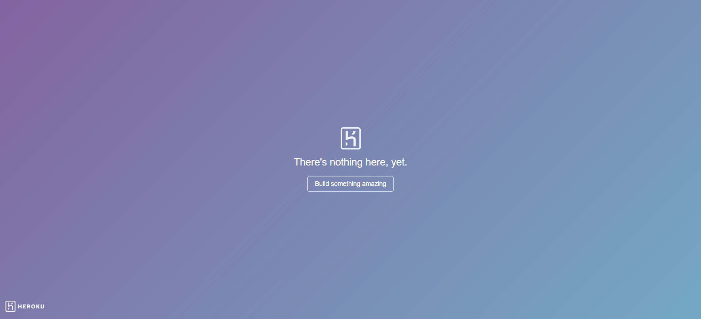

-
Launch Start page and Test Home Page
12:52:51 PM / 00:00:23:588 Fail
Launch Start page and Test Home Page
02.14.2023 12:52:51 PM 02.14.2023 12:53:14 PM 00:00:23:588 · #test-id=1Faillaunch the home page of dsalgo portalGiven user opens the dsalgo portal linkWhen user clicks on "Get Started" buttonhooks.Hooks.afterstep(io.cucumber.java.Scenario)My screenshotThen user redirected to home pageStep skippedFailUser is on Home Page and clicks on any dropdown "" without sign in FailUser is on Home Page and clicks on any dropdown "Arrays" without sign inGiven user is on Home Pagehooks.Hooks.afterstep(io.cucumber.java.Scenario)When The user clicks on data structure dropdown before signinStep skippedThen The user select any dropdown menu "Arrays"Step skippedThen It should Alert the user with the message "You are not logged in"Step skippedFailUser is on Home Page and clicks on any dropdown "Linked List" without sign inGiven user is on Home Pagehooks.Hooks.afterstep(io.cucumber.java.Scenario)When The user clicks on data structure dropdown before signinStep skippedThen The user select any dropdown menu "Linked List"Step skippedThen It should Alert the user with the message "You are not logged in"Step skippedFailUser is on Home Page and clicks on any dropdown "Stack" without sign inGiven user is on Home Pagehooks.Hooks.afterstep(io.cucumber.java.Scenario)When The user clicks on data structure dropdown before signinStep skippedThen The user select any dropdown menu "Stack"Step skippedThen It should Alert the user with the message "You are not logged in"Step skippedFailUser is on Home Page and clicks on any dropdown "Queue" without sign inGiven user is on Home Pagehooks.Hooks.afterstep(io.cucumber.java.Scenario)When The user clicks on data structure dropdown before signinStep skippedThen The user select any dropdown menu "Queue"Step skippedThen It should Alert the user with the message "You are not logged in"Step skippedFailUser is on Home Page and clicks on any dropdown "Tree" without sign inGiven user is on Home Pagehooks.Hooks.afterstep(io.cucumber.java.Scenario)When The user clicks on data structure dropdown before signinStep skippedThen The user select any dropdown menu "Tree"Step skippedThen It should Alert the user with the message "You are not logged in"Step skippedFailUser is on Home Page and clicks on any dropdown "Graph" without sign inGiven user is on Home Pagehooks.Hooks.afterstep(io.cucumber.java.Scenario)When The user clicks on data structure dropdown before signinStep skippedThen The user select any dropdown menu "Graph"Step skippedThen It should Alert the user with the message "You are not logged in"Step skippedFailUser is on Home Page and clicks on any getStarted link "" without sign in FailUser is on Home Page and clicks on any getStarted link "Data Structures-Introduction" without sign inGiven user is on Home Pagehooks.Hooks.afterstep(io.cucumber.java.Scenario)When The user click any of the Get started link before signin "Data Structures-Introduction" in home pageStep skippedThen It should Alert the user with the message "You are not logged in"Step skippedFailUser is on Home Page and clicks on any getStarted link "Arrays" without sign inGiven user is on Home Pagehooks.Hooks.afterstep(io.cucumber.java.Scenario)When The user click any of the Get started link before signin "Arrays" in home pageStep skippedThen It should Alert the user with the message "You are not logged in"Step skippedFailUser is on Home Page and clicks on any getStarted link "Linked List" without sign inGiven user is on Home Pagehooks.Hooks.afterstep(io.cucumber.java.Scenario)When The user click any of the Get started link before signin "Linked List" in home pageStep skippedThen It should Alert the user with the message "You are not logged in"Step skippedFailUser is on Home Page and clicks on any getStarted link "Stack" without sign inGiven user is on Home Pagehooks.Hooks.afterstep(io.cucumber.java.Scenario)When The user click any of the Get started link before signin "Stack" in home pageStep skippedThen It should Alert the user with the message "You are not logged in"Step skippedFailUser is on Home Page and clicks on any getStarted link "Queue" without sign inGiven user is on Home Pagehooks.Hooks.afterstep(io.cucumber.java.Scenario)When The user click any of the Get started link before signin "Queue" in home pageStep skippedThen It should Alert the user with the message "You are not logged in"Step skippedFailUser is on Home Page and clicks on any getStarted link "Tree" without sign inGiven user is on Home Pagehooks.Hooks.afterstep(io.cucumber.java.Scenario)When The user click any of the Get started link before signin "Tree" in home pageStep skippedThen It should Alert the user with the message "You are not logged in"Step skippedFailUser is on Home Page and clicks on any getStarted link "Graph" without sign inGiven user is on Home Pagehooks.Hooks.afterstep(io.cucumber.java.Scenario)When The user click any of the Get started link before signin "Graph" in home pageStep skippedThen It should Alert the user with the message "You are not logged in"Step skippedFailUser is on Home page and Clicks on SigninGiven user is on Home Pagehooks.Hooks.afterstep(io.cucumber.java.Scenario)When user clicks on SignIn linkStep skippedThen user redirected to login pageStep skippedFailUser is on Home page and Clicks on RegisterGiven user is on Home Pagehooks.Hooks.afterstep(io.cucumber.java.Scenario)When user clicks on Register linkStep skippedThen user redirected to register pageStep skipped -
To verify and validate User Register Form
12:53:14 PM / 00:00:00:944 Fail
To verify and validate User Register Form
02.14.2023 12:53:14 PM 02.14.2023 12:53:15 PM 00:00:00:944 · #test-id=128FailTo verify Register Form with Empty fieldsGiven The user opens Register Pagehooks.Hooks.afterstep(io.cucumber.java.Scenario)When User click Register with all empty fieldStep skippedThen User verify the message at username on Register Page as "Please fill out this field."Step skippedFailTo verify Register Form with username onlyGiven The user opens Register Pagehooks.Hooks.afterstep(io.cucumber.java.Scenario)When User click Register with username as "numpy" onlyStep skippedThen User verify the message at password on Register Page as "Please fill out this field."Step skippedFailTo verify Register Form with username and password onlyGiven The user opens Register Pagehooks.Hooks.afterstep(io.cucumber.java.Scenario)When User click Register with username as "numpy" and password as "ninja" onlyStep skippedThen User verify the message at confirmpassword on Register Page as "Please fill out this field."Step skippedFailTo verify Register Form with invalid credentialsFailTo verify Register Form with invalid credentialsGiven The user opens Register Pagehooks.Hooks.afterstep(io.cucumber.java.Scenario)When User enter "numpy84$3" ,"ninja" and "ninja"Step skippedThen User click Register and verify the "password_mismatch:The two password fields didn’t match."Step skippedFailTo verify Register Form with invalid credentialsGiven The user opens Register Pagehooks.Hooks.afterstep(io.cucumber.java.Scenario)When User enter "numpy" ,"automation" and "automation84"Step skippedThen User click Register and verify the "password_mismatch:The two password fields didn’t match."Step skippedFailTo verify Register Form with invalid credentialsGiven The user opens Register Pagehooks.Hooks.afterstep(io.cucumber.java.Scenario)When User enter "numpy" ,"123456789" and "123456789"Step skippedThen User click Register and verify the "password_mismatch:The two password fields didn’t match."Step skippedFailTo verify Register Form with invalid credentialsGiven The user opens Register Pagehooks.Hooks.afterstep(io.cucumber.java.Scenario)When User enter "numpy" ,"ninja5" and "ninja5"Step skippedThen User click Register and verify the "password_mismatch:The two password fields didn’t match."Step skippedFailto register with all the dataFailto register with all the dataGiven The user opens Register Pagehooks.Hooks.afterstep(io.cucumber.java.Scenario)When user enter the sheetname "Register" and row number 0Step skippedThen user click on Register button and verify message as "password_mismatch:The two password fields didn’t match."Step skippedFailto register with all the dataGiven The user opens Register Pagehooks.Hooks.afterstep(io.cucumber.java.Scenario)When user enter the sheetname "Register" and row number 1Step skippedThen user click on Register button and verify message as "password_mismatch:The two password fields didn’t match."Step skippedFailto register with all the dataGiven The user opens Register Pagehooks.Hooks.afterstep(io.cucumber.java.Scenario)When user enter the sheetname "Register" and row number 2Step skippedThen user click on Register button and verify message as "password_mismatch:The two password fields didn’t match."Step skippedFailto register with all the dataGiven The user opens Register Pagehooks.Hooks.afterstep(io.cucumber.java.Scenario)When user enter the sheetname "Register" and row number 3Step skippedThen user click on Register button and verify message as "password_mismatch:The two password fields didn’t match."Step skipped -
Login Action
12:53:15 PM / 00:00:00:794 Fail
Login Action
02.14.2023 12:53:15 PM 02.14.2023 12:53:16 PM 00:00:00:794 · #test-id=208FailRedirect to Register pageGiven User is on SignIn pagehooks.Hooks.afterstep(io.cucumber.java.Scenario)When User Clicks on Register linkStep skippedThen User should be redirected to Register pageStep skippedFailTo verify SignIn with Empty fieldsGiven User is on SignIn pagehooks.Hooks.afterstep(io.cucumber.java.Scenario)When User clicks on login button with all empty fieldStep skippedThen User verify the message at username as "Please fill out this field."Step skippedFailTo verify SignIn with username onlyGiven User is on SignIn pagehooks.Hooks.afterstep(io.cucumber.java.Scenario)When User clicks on login button with username as "numpy" onlyStep skippedThen User verify the message at password as "Please fill out this field."Step skippedFailTo verify SignIn with password onlyGiven User is on SignIn pagehooks.Hooks.afterstep(io.cucumber.java.Scenario)When User clicks on login button with password as "numpy" onlyStep skippedThen User verify the message at user as "Please fill out this field."Step skippedFailTo verify SignIn with invalid "" and " " FailTo verify SignIn with invalid "abcdefgh" and "zxyu1234"Given User is on SignIn pagehooks.Hooks.afterstep(io.cucumber.java.Scenario)When User enters username as "abcdefgh"Step skippedAnd User enters password as "zxyu1234"Step skippedAnd User clicks login buttonStep skippedThen User verify the message as "Invalid Username and Password"Step skippedFailUser Login with valid "" and " " FailUser Login with valid "" and " " Given User is on SignIn pagehooks.Hooks.afterstep(io.cucumber.java.Scenario)When User enters sheetname "SignIn" and rownumber 0Step skippedAnd User clicks on login buttonStep skippedThen It should navigate to the home page with a message " You are logged in "Step skippedFailSuccessful LogOutWhen User clicks on signouthooks.Hooks.afterstep(io.cucumber.java.Scenario)Then Message displayed LoggedOut SuccessfullyStep skipped -
Data Structure page validation dsalgo
12:53:16 PM / 00:00:00:098 Fail
Data Structure page validation dsalgo
02.14.2023 12:53:16 PM 02.14.2023 12:53:16 PM 00:00:00:098 · #test-id=264FailUser is clicks on datastructure pageGiven The user is on Signin page of DS Algo portalhooks.Hooks.afterstep(io.cucumber.java.Scenario)When The user enter valid "Ninjauser1" and "Secret123#"Step skippedAnd The user click on login buttonStep skippedThen The user redirected to homepageStep skippedGiven The user is on Home page after logged inStep skippedWhen user clicks on datastructure getstartedStep skippedThen user redirected to page with title "Data Structures-Introduction"Step skippedWhen user click on Time ComplexityStep skippedThen It should navigate to corresponding page with title "Time Complexity"Step skippedWhen user click on Try hereStep skippedThen It should navigate to corresponding page with title "Assessment"Step skippedWhen user enter the Python codeprint"DataStructure Introduction" Step skippedAnd click on run buttonStep skippedThen The user redirected to homepageStep skipped -
Validation of Array Page
12:53:17 PM / 00:00:01:491 Fail
Validation of Array Page
02.14.2023 12:53:17 PM 02.14.2023 12:53:18 PM 00:00:01:491 · #test-id=294FailValidation of Array pageGiven The user is on Signin page of DS Algo portalhooks.Hooks.afterstep(io.cucumber.java.Scenario)When The user enter valid "Ninjauser1" and "Secret123#"Step skippedAnd The user click on login buttonStep skippedThen The user redirected to homepageStep skippedGiven The user is on Home page after logged inStep skippedWhen user clicks on Array getstartedStep skippedThen User should be redirected to "Array" pageStep skippedFailValidation of Arrays in Python linkGiven The user is on Signin page of DS Algo portalhooks.Hooks.afterstep(io.cucumber.java.Scenario)When The user enter valid "Ninjauser1" and "Secret123#"Step skippedAnd The user click on login buttonStep skippedThen The user redirected to homepageStep skippedGiven User is on "Array page" after logged inStep skippedWhen User clicks on Arrays in Python linkStep skippedThen User should be redirected to "Arrays in Python" pageStep skippedFailValidation of Try Here buttonGiven The user is on Signin page of DS Algo portalhooks.Hooks.afterstep(io.cucumber.java.Scenario)When The user enter valid "Ninjauser1" and "Secret123#"Step skippedAnd The user click on login buttonStep skippedThen The user redirected to homepageStep skippedGiven User is on "Arrays in Python page" after logged inStep skippedWhen User clicks on "Try Here" button in "Arrays in Python page"Step skippedThen User should be redirected to a page having an tryEditor with a Run button to testStep skippedFailValidation of valid python code in TryEditor pageFailValidation of valid python code in TryEditor pageGiven The user is on Signin page of DS Algo portalhooks.Hooks.afterstep(io.cucumber.java.Scenario)When The user enter valid "Ninjauser1" and "Secret123#"Step skippedAnd The user click on login buttonStep skippedThen The user redirected to homepageStep skippedGiven User is on "Try Editor Page" after logged inStep skippedWhen User enters valid Python code from sheet "PythonCode" and 0Step skippedAnd User clicks on Run buttonStep skippedThen User should be able to see the outputStep skippedFailValidation of error message for invalid python code in TryEditor pageFailValidation of error message for invalid python code in TryEditor pageGiven The user is on Signin page of DS Algo portalhooks.Hooks.afterstep(io.cucumber.java.Scenario)When The user enter valid "Ninjauser1" and "Secret123#"Step skippedAnd The user click on login buttonStep skippedThen The user redirected to homepageStep skippedGiven User is on "Try Editor Page" after logged inStep skippedWhen User enters invalid Python code from sheet "PythonCode" and 1Step skippedAnd User clicks on Run buttonStep skippedThen User should be able to see error messageStep skippedFailValidation of Arrays Using List linkGiven The user is on Signin page of DS Algo portalhooks.Hooks.afterstep(io.cucumber.java.Scenario)When The user enter valid "Ninjauser1" and "Secret123#"Step skippedAnd The user click on login buttonStep skippedThen The user redirected to homepageStep skippedGiven User is on "Array page" after logged inStep skippedWhen User clicks on Arrays Using List linkStep skippedThen User should be redirected to "Arrays Using List" pageStep skippedFailValidation of Try Here buttonGiven The user is on Signin page of DS Algo portalhooks.Hooks.afterstep(io.cucumber.java.Scenario)When The user enter valid "Ninjauser1" and "Secret123#"Step skippedAnd The user click on login buttonStep skippedThen The user redirected to homepageStep skippedGiven User is on "Arrays Using List" after logged inStep skippedWhen User clicks on "Try Here" button in "Arrays Using List"Step skippedThen User should be redirected to a page having an tryEditor with a Run button to testStep skippedFailValidation of valid python code in TryEditor page using Arrays Using ListFailValidation of valid python code in TryEditor page using Arrays Using ListGiven The user is on Signin page of DS Algo portalhooks.Hooks.afterstep(io.cucumber.java.Scenario)When The user enter valid "Ninjauser1" and "Secret123#"Step skippedAnd The user click on login buttonStep skippedThen The user redirected to homepageStep skippedGiven User is on "Try Editor Page" after logged inStep skippedWhen User enters valid Python code from sheet "PythonCode" and 2Step skippedAnd User clicks on Run buttonStep skippedThen User should be able to see the outputStep skippedFailValidation of invalid python code in TryEditor page for Arrays Using ListFailValidation of invalid python code in TryEditor page for Arrays Using ListGiven The user is on Signin page of DS Algo portalhooks.Hooks.afterstep(io.cucumber.java.Scenario)When The user enter valid "Ninjauser1" and "Secret123#"Step skippedAnd The user click on login buttonStep skippedThen The user redirected to homepageStep skippedGiven User is on "Try Editor Page" after logged inStep skippedWhen User enters invalid Python code from sheet "PythonCode" and 3Step skippedAnd User clicks on Run buttonStep skippedThen User should be able to see error message in an AlertStep skippedFailValidation of Basic Operations in Lists linkGiven The user is on Signin page of DS Algo portalhooks.Hooks.afterstep(io.cucumber.java.Scenario)When The user enter valid "Ninjauser1" and "Secret123#"Step skippedAnd The user click on login buttonStep skippedThen The user redirected to homepageStep skippedGiven User is on "Array page" after logged inStep skippedWhen User clicks on Basic Operations in Lists linkStep skippedThen User should be redirected to "Basic Operations in Lists" pageStep skippedFailValidation of valid python code in TryEditor page for Basic Operations in ListsFailValidation of valid python code in TryEditor page for Basic Operations in ListsGiven The user is on Signin page of DS Algo portalhooks.Hooks.afterstep(io.cucumber.java.Scenario)When The user enter valid "Ninjauser1" and "Secret123#"Step skippedAnd The user click on login buttonStep skippedThen The user redirected to homepageStep skippedGiven User is on "Try Editor Page" after logged inStep skippedWhen User enters valid Python code from sheet "PythonCode" and 4Step skippedAnd User clicks on Run buttonStep skippedThen User should be able to see the outputStep skippedFailValidation of invalid python code in TryEditor page for Basic Operations in ListsFailValidation of invalid python code in TryEditor page for Basic Operations in ListsGiven The user is on Signin page of DS Algo portalhooks.Hooks.afterstep(io.cucumber.java.Scenario)When The user enter valid "Ninjauser1" and "Secret123#"Step skippedAnd The user click on login buttonStep skippedThen The user redirected to homepageStep skippedGiven User is on "Try Editor Page" after logged inStep skippedWhen User enters invalid Python code from sheet "PythonCode" and 5Step skippedAnd User clicks on Run buttonStep skippedThen User should be able to see error message in an Alert boxStep skippedFailValidation of Applications of Arrays linkGiven The user is on Signin page of DS Algo portalhooks.Hooks.afterstep(io.cucumber.java.Scenario)When The user enter valid "Ninjauser1" and "Secret123#"Step skippedAnd The user click on login buttonStep skippedThen The user redirected to homepageStep skippedGiven User is on "Array page" after logged inStep skippedWhen User clicks on Applications of Array linkStep skippedThen User should be redirected to "Applications of Array" pageStep skippedFailValidation of valid python code in TryEditor page for Applications of ArrayFailValidation of valid python code in TryEditor page for Applications of ArrayGiven The user is on Signin page of DS Algo portalhooks.Hooks.afterstep(io.cucumber.java.Scenario)When The user enter valid "Ninjauser1" and "Secret123#"Step skippedAnd The user click on login buttonStep skippedThen The user redirected to homepageStep skippedGiven User is on "Try Editor Page" after logged inStep skippedWhen User enters valid Python code from sheet "PythonCode" and 6Step skippedAnd User clicks on Run buttonStep skippedThen User should be able to see the outputStep skippedFailValidation of Practice Questions linkGiven The user is on Signin page of DS Algo portalhooks.Hooks.afterstep(io.cucumber.java.Scenario)When The user enter valid "Ninjauser1" and "Secret123#"Step skippedAnd The user click on login buttonStep skippedThen The user redirected to homepageStep skippedGiven User is on "Arrays in Python page" after logged inStep skippedWhen User clicks on Practice Questions linkStep skippedThen User should be redirected to "Practice Questions" pageStep skippedFailValidation of Search the Array linkGiven The user is on Signin page of DS Algo portalhooks.Hooks.afterstep(io.cucumber.java.Scenario)When The user enter valid "Ninjauser1" and "Secret123#"Step skippedAnd The user click on login buttonStep skippedThen The user redirected to homepageStep skippedGiven User is on "Practice page" after logged inStep skippedWhen User clicks on Search the Array linkStep skippedThen User should be redirected to Questions page contains a tryEditor with Run and Submit buttonsStep skippedFailValidation of valid python code in Practice Questions page for Search for Array linkFailValidation of valid python code in Practice Questions page for Search for Array linkGiven The user is on Signin page of DS Algo portalhooks.Hooks.afterstep(io.cucumber.java.Scenario)When The user enter valid "Ninjauser1" and "Secret123#"Step skippedAnd The user click on login buttonStep skippedThen The user redirected to homepageStep skippedGiven User is on "Question" page of "Search the array" after logged inStep skippedWhen User enters valid Python code from sheet "PythonCode" and 8 for the PracticeQuestionsStep skippedAnd User clicks on Run buttonStep skippedThen User should be able to see the ResultStep skippedFailValidation of Submit button in Practice Questions page for Search for Array linkFailValidation of Submit button in Practice Questions page for Search for Array linkGiven The user is on Signin page of DS Algo portalhooks.Hooks.afterstep(io.cucumber.java.Scenario)When The user enter valid "Ninjauser1" and "Secret123#"Step skippedAnd The user click on login buttonStep skippedThen The user redirected to homepageStep skippedGiven User is on "Question" page of "Search the array" after logged inStep skippedWhen User enters valid Python code from sheet "PythonCode" and 9 for the PracticeQuestionsStep skippedAnd User clicks on Submit buttonStep skippedThen User should get success submission messageStep skippedFailValidation of Max Consecutive Ones linkGiven The user is on Signin page of DS Algo portalhooks.Hooks.afterstep(io.cucumber.java.Scenario)When The user enter valid "Ninjauser1" and "Secret123#"Step skippedAnd The user click on login buttonStep skippedThen The user redirected to homepageStep skippedGiven User is on "Practice page" after logged inStep skippedWhen User clicks on Max Consecutive Ones linkStep skippedThen User should be redirected to Questions page contains a tryEditor with Run and Submit buttonsStep skippedFailValidation of valid python code in Practice Questions page for Max Consecutive Ones linkFailValidation of valid python code in Practice Questions page for Max Consecutive Ones linkGiven The user is on Signin page of DS Algo portalhooks.Hooks.afterstep(io.cucumber.java.Scenario)When The user enter valid "Ninjauser1" and "Secret123#"Step skippedAnd The user click on login buttonStep skippedThen The user redirected to homepageStep skippedGiven User is on "Question" page of "Max Consecutive Ones" after logged inStep skippedWhen User enters valid Python code from sheet "PythonCode" and 10 for the PracticeQuestionsStep skippedAnd User clicks on Run buttonStep skippedThen User should be able to see the ResultStep skippedFailValidation of Submit button in Practice Questions page for Max Consecutive Ones linkFailValidation of Submit button in Practice Questions page for Max Consecutive Ones linkGiven The user is on Signin page of DS Algo portalhooks.Hooks.afterstep(io.cucumber.java.Scenario)When The user enter valid "Ninjauser1" and "Secret123#"Step skippedAnd The user click on login buttonStep skippedThen The user redirected to homepageStep skippedGiven User is on "Question" page of "Max Consecutive Ones" after logged inStep skippedWhen User enters valid Python code from sheet "PythonCode" and 11 for the PracticeQuestionsStep skippedAnd User clicks on Submit buttonStep skippedThen User should get success submission messageStep skippedFailValidation of Find Numbers with Even Number of Digits linkGiven The user is on Signin page of DS Algo portalhooks.Hooks.afterstep(io.cucumber.java.Scenario)When The user enter valid "Ninjauser1" and "Secret123#"Step skippedAnd The user click on login buttonStep skippedThen The user redirected to homepageStep skippedGiven User is on "Practice page" after logged inStep skippedWhen User clicks on Find Numbers with Even Number of Digits linkStep skippedThen User should be redirected to Questions page contains a tryEditor with Run and Submit buttonsStep skippedFailValidation of valid python code in Practice Questions page for Find Numbers with Even Numbers of Digits linkFailValidation of valid python code in Practice Questions page for Find Numbers with Even Numbers of Digits linkGiven The user is on Signin page of DS Algo portalhooks.Hooks.afterstep(io.cucumber.java.Scenario)When The user enter valid "Ninjauser1" and "Secret123#"Step skippedAnd The user click on login buttonStep skippedThen The user redirected to homepageStep skippedGiven User is on "Question" page of "FindNumberswithEvenNumberofDigits" after logged inStep skippedWhen User enters valid Python code from sheet "PythonCode" and 12 for the PracticeQuestionsStep skippedAnd User clicks on Run buttonStep skippedThen User should be able to see the ResultStep skippedFailValidation of valid python code in Practice Questions page for Find Numbers with Even Numbers of Digits linkGiven The user is on Signin page of DS Algo portalhooks.Hooks.afterstep(io.cucumber.java.Scenario)When The user enter valid "Ninjauser1" and "Secret123#"Step skippedAnd The user click on login buttonStep skippedThen The user redirected to homepageStep skippedGiven User is on "Question" page of "Squares of a Sorted Array" after logged inStep skippedWhen User enters valid Python code from sheet "PythonCode" and 14 for the PracticeQuestionsStep skippedAnd User clicks on Run buttonStep skippedThen User should be able to see the ResultStep skippedFailValidation of Submit button in Practice Questions page for Find Numbers with Even Numbers of Digits linkFailValidation of Submit button in Practice Questions page for Find Numbers with Even Numbers of Digits linkGiven The user is on Signin page of DS Algo portalhooks.Hooks.afterstep(io.cucumber.java.Scenario)When The user enter valid "Ninjauser1" and "Secret123#"Step skippedAnd The user click on login buttonStep skippedThen The user redirected to homepageStep skippedGiven User is on "Question" page of "FindNumberswithEvenNumberofDigits" after logged inStep skippedWhen User enters valid Python code from sheet "PythonCode" and 13 for the PracticeQuestionsStep skippedAnd User clicks on Submit buttonStep skippedThen User should get success submission messageStep skippedFailValidation of Submit button in Practice Questions page for Find Numbers with Even Numbers of Digits linkGiven The user is on Signin page of DS Algo portalhooks.Hooks.afterstep(io.cucumber.java.Scenario)When The user enter valid "Ninjauser1" and "Secret123#"Step skippedAnd The user click on login buttonStep skippedThen The user redirected to homepageStep skippedGiven User is on "Question" page of "Squares of a Sorted Array" after logged inStep skippedWhen User enters valid Python code from sheet "PythonCode" and 15 for the PracticeQuestionsStep skippedAnd User clicks on Submit buttonStep skippedThen User should get success submission messageStep skippedFailValidation of Squares of a Sorted Array linkGiven The user is on Signin page of DS Algo portalhooks.Hooks.afterstep(io.cucumber.java.Scenario)When The user enter valid "Ninjauser1" and "Secret123#"Step skippedAnd The user click on login buttonStep skippedThen The user redirected to homepageStep skippedGiven User is on "Practice page" after logged inStep skippedWhen User clicks on Squares of a Sorted Array linkStep skippedThen User should be redirected to Questions page contains a tryEditor with Run and Submit buttonsStep skipped -
Linked List page validation dsalgo
12:53:18 PM / 00:00:01:239 Fail
Linked List page validation dsalgo
02.14.2023 12:53:18 PM 02.14.2023 12:53:19 PM 00:00:01:239 · #test-id=743FailUser navigated to "linked list" pageGiven The user is on Signin page of DS Algo portalhooks.Hooks.afterstep(io.cucumber.java.Scenario)When The user enter valid "Ninjauser1" and "Secret123#"Step skippedAnd The user click on login buttonStep skippedThen The user redirected to homepageStep skippedGiven The user is on Home page after logged inStep skippedWhen The user selecting linkedlist item from the drop down menuStep skippedThen The user redirected to "Linked List" PageStep skippedFailUser navigated to "Introduction" pageGiven The user is on Signin page of DS Algo portalhooks.Hooks.afterstep(io.cucumber.java.Scenario)When The user enter valid "Ninjauser1" and "Secret123#"Step skippedAnd The user click on login buttonStep skippedThen The user redirected to homepageStep skippedGiven The user is on the "Linked List page" after logged inStep skippedWhen The user clicks Introduction linkStep skippedThen The user move to "Introduction" of Linked List PageStep skippedFailUser navigated to tryEditor page with Run button from Introduction pageGiven The user is on Signin page of DS Algo portalhooks.Hooks.afterstep(io.cucumber.java.Scenario)When The user enter valid "Ninjauser1" and "Secret123#"Step skippedAnd The user click on login buttonStep skippedThen The user redirected to homepageStep skippedGiven The user is on the "Introduction" after logged inStep skippedWhen The user clicks "Try Here" button in the "introduction" pageStep skippedThen The user redirected to the page having an tryEditor with a Run button to testStep skippedFailUser run the code in tryEditor with valid input for Introduction pageGiven The user is on Signin page of DS Algo portalhooks.Hooks.afterstep(io.cucumber.java.Scenario)When The user enter valid "Ninjauser1" and "Secret123#"Step skippedAnd The user click on login buttonStep skippedThen The user redirected to homepageStep skippedGiven The user is in a try here page having tryEditor with a Run button to testStep skippedWhen The user Enter valid python codeprint("LinkedList Introduction") Step skippedAnd click on run buttonStep skippedThen The user should get the Run outputStep skippedFailThe user getting error message with invalid python code for Introduction pageGiven The user is on Signin page of DS Algo portalhooks.Hooks.afterstep(io.cucumber.java.Scenario)When The user enter valid "Ninjauser1" and "Secret123#"Step skippedAnd The user click on login buttonStep skippedThen The user redirected to homepageStep skippedGiven The user is in a try here page having tryEditor with a Run button to testStep skippedWhen The user Enter invalid python codeprint LinkedList Introduction Step skippedAnd click on run buttonStep skippedThen The user get the error messageStep skippedFailUser navigated to "creating linked list" pageGiven The user is on Signin page of DS Algo portalhooks.Hooks.afterstep(io.cucumber.java.Scenario)When The user enter valid "Ninjauser1" and "Secret123#"Step skippedAnd The user click on login buttonStep skippedThen The user redirected to homepageStep skippedGiven The user is on the "Linked List page" after logged inStep skippedWhen The user clicks creating linked list linkStep skippedThen The user move to "Creating Linked LIst" of Linked List PageStep skippedFailUser navigated to tryEditor page with Run button from Creating a Linked List pageGiven The user is on Signin page of DS Algo portalhooks.Hooks.afterstep(io.cucumber.java.Scenario)When The user enter valid "Ninjauser1" and "Secret123#"Step skippedAnd The user click on login buttonStep skippedThen The user redirected to homepageStep skippedGiven The user is on the "Creating a Linked List" after logged inStep skippedWhen The user clicks "Try Here" button in the "creating linked list" pageStep skippedThen The user redirected to the page having an tryEditor with a Run button to testStep skippedFailUser run the code in tryEditor with valid input for Creating a Linked List pageGiven The user is on Signin page of DS Algo portalhooks.Hooks.afterstep(io.cucumber.java.Scenario)When The user enter valid "Ninjauser1" and "Secret123#"Step skippedAnd The user click on login buttonStep skippedThen The user redirected to homepageStep skippedGiven The user is in a try here page having tryEditor with a Run button to testStep skippedWhen The user Enter valid python codeprint("Creating a Linked List") Step skippedAnd click on run buttonStep skippedThen The user should get the Run outputStep skippedFailThe user getting error message with invalid python code for Creating a Linked List pageGiven The user is on Signin page of DS Algo portalhooks.Hooks.afterstep(io.cucumber.java.Scenario)When The user enter valid "Ninjauser1" and "Secret123#"Step skippedAnd The user click on login buttonStep skippedThen The user redirected to homepageStep skippedGiven The user is in a try here page having tryEditor with a Run button to testStep skippedWhen The user Enter invalid python codeprint Creating a Linked List Step skippedAnd click on run buttonStep skippedThen The user get the error messageStep skippedFailUser navigated to "Types of linked list" pageGiven The user is on Signin page of DS Algo portalhooks.Hooks.afterstep(io.cucumber.java.Scenario)When The user enter valid "Ninjauser1" and "Secret123#"Step skippedAnd The user click on login buttonStep skippedThen The user redirected to homepageStep skippedGiven The user is on the "Linked List page" after logged inStep skippedWhen The user clicks Types of Linked List linkStep skippedThen The user move to "Types of Linked List" of Linked List PageStep skippedFailUser navigated to tryEditor page with Run button from Types of Linked List pageGiven The user is on Signin page of DS Algo portalhooks.Hooks.afterstep(io.cucumber.java.Scenario)When The user enter valid "Ninjauser1" and "Secret123#"Step skippedAnd The user click on login buttonStep skippedThen The user redirected to homepageStep skippedGiven The user is on the "Types of Linked list" after logged inStep skippedWhen The user clicks "Try Here" button in the "types of linked list" pageStep skippedThen The user redirected to the page having an tryEditor with a Run button to testStep skippedFailUser run the code in tryEditor with valid input for Types of Linked List pageGiven The user is on Signin page of DS Algo portalhooks.Hooks.afterstep(io.cucumber.java.Scenario)When The user enter valid "Ninjauser1" and "Secret123#"Step skippedAnd The user click on login buttonStep skippedThen The user redirected to homepageStep skippedGiven The user is in a try here page having tryEditor with a Run button to testStep skippedWhen The user Enter valid python codeprint("Types of Linked List") Step skippedAnd click on run buttonStep skippedThen The user should get the Run outputStep skippedFailThe user getting error message with invalid python code for Types of Linked List pageGiven The user is on Signin page of DS Algo portalhooks.Hooks.afterstep(io.cucumber.java.Scenario)When The user enter valid "Ninjauser1" and "Secret123#"Step skippedAnd The user click on login buttonStep skippedThen The user redirected to homepageStep skippedGiven The user is in a try here page having tryEditor with a Run button to testStep skippedWhen The user Enter invalid python codeprint Types of Linked List Step skippedAnd click on run buttonStep skippedThen The user get the error messageStep skippedFailUser navigated to "Implementation linked list in python" pageGiven The user is on Signin page of DS Algo portalhooks.Hooks.afterstep(io.cucumber.java.Scenario)When The user enter valid "Ninjauser1" and "Secret123#"Step skippedAnd The user click on login buttonStep skippedThen The user redirected to homepageStep skippedGiven The user is on the "Linked List page" after logged inStep skippedWhen The user clicks Implement Linked List in Python linkStep skippedThen The user move to "Implement Linked List in Python" of Linked List PageStep skippedFailUser navigated to tryEditor page with Run button from Implement Linked List in Python pageGiven The user is on Signin page of DS Algo portalhooks.Hooks.afterstep(io.cucumber.java.Scenario)When The user enter valid "Ninjauser1" and "Secret123#"Step skippedAnd The user click on login buttonStep skippedThen The user redirected to homepageStep skippedGiven The user is on the "Implement Linked List in Python" after logged inStep skippedWhen The user clicks "Try Here" button in the "implemented linked list in pythont" pageStep skippedThen The user redirected to the page having an tryEditor with a Run button to testStep skippedFailUser run the code in tryEditor with valid input for Implement Linked List in Python pageGiven The user is on Signin page of DS Algo portalhooks.Hooks.afterstep(io.cucumber.java.Scenario)When The user enter valid "Ninjauser1" and "Secret123#"Step skippedAnd The user click on login buttonStep skippedThen The user redirected to homepageStep skippedGiven The user is in a try here page having tryEditor with a Run button to testStep skippedWhen The user Enter valid python codeprint("Implement Linked List in Python") Step skippedAnd click on run buttonStep skippedThen The user should get the Run outputStep skippedFailThe user getting error message with invalid python code for Implement Linked List in Python pageGiven The user is on Signin page of DS Algo portalhooks.Hooks.afterstep(io.cucumber.java.Scenario)When The user enter valid "Ninjauser1" and "Secret123#"Step skippedAnd The user click on login buttonStep skippedThen The user redirected to homepageStep skippedGiven The user is in a try here page having tryEditor with a Run button to testStep skippedWhen The user Enter invalid python codeprint Implement Linked List in Python Step skippedAnd click on run buttonStep skippedThen The user get the error messageStep skippedFailUser navigated to "Traversal" pageGiven The user is on Signin page of DS Algo portalhooks.Hooks.afterstep(io.cucumber.java.Scenario)When The user enter valid "Ninjauser1" and "Secret123#"Step skippedAnd The user click on login buttonStep skippedThen The user redirected to homepageStep skippedGiven The user is on the "Linked List page" after logged inStep skippedWhen The user clicks Traversal linkStep skippedThen The user move to "Traversal" of Linked List PageStep skippedFailUser navigated to tryEditor page with Run button from Traversal pageGiven The user is on Signin page of DS Algo portalhooks.Hooks.afterstep(io.cucumber.java.Scenario)When The user enter valid "Ninjauser1" and "Secret123#"Step skippedAnd The user click on login buttonStep skippedThen The user redirected to homepageStep skippedGiven The user is on the "Traversal" after logged inStep skippedWhen The user clicks "Try Here" button in the "traversal" pageStep skippedThen The user redirected to the page having an tryEditor with a Run button to testStep skippedFailUser run the code in tryEditor with valid input for Traversal pageGiven The user is on Signin page of DS Algo portalhooks.Hooks.afterstep(io.cucumber.java.Scenario)When The user enter valid "Ninjauser1" and "Secret123#"Step skippedAnd The user click on login buttonStep skippedThen The user redirected to homepageStep skippedGiven The user is in a try here page having tryEditor with a Run button to testStep skippedWhen The user Enter valid python codeprint("Traversal") Step skippedAnd click on run buttonStep skippedThen The user should get the Run outputStep skippedFailThe user getting error message with invalid python code for Traversal pageGiven The user is on Signin page of DS Algo portalhooks.Hooks.afterstep(io.cucumber.java.Scenario)When The user enter valid "Ninjauser1" and "Secret123#"Step skippedAnd The user click on login buttonStep skippedThen The user redirected to homepageStep skippedGiven The user is in a try here page having tryEditor with a Run button to testStep skippedWhen The user Enter invalid python codeprint Traversal Step skippedAnd click on run buttonStep skippedThen The user get the error messageStep skippedFailUser navigated to "Insertion" pageGiven The user is on Signin page of DS Algo portalhooks.Hooks.afterstep(io.cucumber.java.Scenario)When The user enter valid "Ninjauser1" and "Secret123#"Step skippedAnd The user click on login buttonStep skippedThen The user redirected to homepageStep skippedGiven The user is on the "Linked List page" after logged inStep skippedWhen The user clicks Insertion linkStep skippedThen The user move to "Insertion" of Linked List PageStep skippedFailUser navigated to tryEditor page with Run button from Insertion pageGiven The user is on Signin page of DS Algo portalhooks.Hooks.afterstep(io.cucumber.java.Scenario)When The user enter valid "Ninjauser1" and "Secret123#"Step skippedAnd The user click on login buttonStep skippedThen The user redirected to homepageStep skippedGiven The user is on the "Insertion" after logged inStep skippedWhen The user clicks "Try Here" button in the "Insertion" pageStep skippedThen The user redirected to the page having an tryEditor with a Run button to testStep skippedFailUser run the code in tryEditor with valid input for Insertion pageGiven The user is on Signin page of DS Algo portalhooks.Hooks.afterstep(io.cucumber.java.Scenario)When The user enter valid "Ninjauser1" and "Secret123#"Step skippedAnd The user click on login buttonStep skippedThen The user redirected to homepageStep skippedGiven The user is in a try here page having tryEditor with a Run button to testStep skippedWhen The user Enter valid python codeprint("Insertion") Step skippedAnd click on run buttonStep skippedThen The user should get the Run outputStep skippedFailThe user getting error message with invalid python code for Insertion pageGiven The user is on Signin page of DS Algo portalhooks.Hooks.afterstep(io.cucumber.java.Scenario)When The user enter valid "Ninjauser1" and "Secret123#"Step skippedAnd The user click on login buttonStep skippedThen The user redirected to homepageStep skippedGiven The user is in a try here page having tryEditor with a Run button to testStep skippedWhen The user Enter invalid python codeprint Insertion Step skippedAnd click on run buttonStep skippedThen The user get the error messageStep skippedFailUser navigated to "Deletion" pageGiven The user is on Signin page of DS Algo portalhooks.Hooks.afterstep(io.cucumber.java.Scenario)When The user enter valid "Ninjauser1" and "Secret123#"Step skippedAnd The user click on login buttonStep skippedThen The user redirected to homepageStep skippedGiven The user is on the "Linked List page" after logged inStep skippedWhen The user clicks Deletion linkStep skippedThen The user move to "Deletion" of Linked List PageStep skippedFailUser navigated to tryEditor page with Run button from Deletion pageGiven The user is on Signin page of DS Algo portalhooks.Hooks.afterstep(io.cucumber.java.Scenario)When The user enter valid "Ninjauser1" and "Secret123#"Step skippedAnd The user click on login buttonStep skippedThen The user redirected to homepageStep skippedGiven The user is on the "Deletion" after logged inStep skippedWhen The user clicks "Try Here" button in the "Deletion" pageStep skippedThen The user redirected to the page having an tryEditor with a Run button to testStep skippedFailUser run the code in tryEditor with valid input for Deletion pageGiven The user is on Signin page of DS Algo portalhooks.Hooks.afterstep(io.cucumber.java.Scenario)When The user enter valid "Ninjauser1" and "Secret123#"Step skippedAnd The user click on login buttonStep skippedThen The user redirected to homepageStep skippedGiven The user is in a try here page having tryEditor with a Run button to testStep skippedWhen The user Enter valid python codeprint("Deletion") Step skippedAnd click on run buttonStep skippedThen The user should get the Run outputStep skippedFailThe user getting error message with invalid python code for Deletion pageGiven The user is on Signin page of DS Algo portalhooks.Hooks.afterstep(io.cucumber.java.Scenario)When The user enter valid "Ninjauser1" and "Secret123#"Step skippedAnd The user click on login buttonStep skippedThen The user redirected to homepageStep skippedGiven The user is in a try here page having tryEditor with a Run button to testStep skippedWhen The user Enter invalid python codeprint Deletion Step skippedAnd click on run buttonStep skippedThen The user get the error messageStep skippedFailThe user validating "Practice Questions" pageGiven The user is on Signin page of DS Algo portalhooks.Hooks.afterstep(io.cucumber.java.Scenario)When The user enter valid "Ninjauser1" and "Secret123#"Step skippedAnd The user click on login buttonStep skippedThen The user redirected to homepageStep skippedGiven The user is on the "Linked List page" after logged inStep skippedWhen The user clicks Introduction linkStep skippedAnd The user clicks on the Practice QuestionsStep skippedThen The user move to "Practice Questions" of Linked List PageStep skipped -
Stack page validation dsalgo
12:53:19 PM / 00:00:00:372 Fail
Stack page validation dsalgo
02.14.2023 12:53:19 PM 02.14.2023 12:53:20 PM 00:00:00:372 · #test-id=1,224FailUser navigates the Stack pageGiven The user is on Signin page of DS Algo portalhooks.Hooks.afterstep(io.cucumber.java.Scenario)When The user enter valid "Ninjauser1" and "Secret123#"Step skippedAnd The user click on login buttonStep skippedThen The user redirected to homepageStep skippedGiven The user is on Home page after logged inStep skippedWhen The User clicks on the Stack Get Started buttonStep skippedThen The User is redirected to the "Stack" pageStep skippedFailUser navigates to the Operations in Stack PageGiven The user is on Signin page of DS Algo portalhooks.Hooks.afterstep(io.cucumber.java.Scenario)When The user enter valid "Ninjauser1" and "Secret123#"Step skippedAnd The user click on login buttonStep skippedThen The user redirected to homepageStep skippedGiven The User is in the "Stack page" after logged inStep skippedWhen The User clicks the Operations in Stack linkStep skippedThen The User is redirected to the page with title "Operations in Stack"Step skippedFailThe User navigates to tryEditor page from Operations in Stack pageGiven The user is on Signin page of DS Algo portalhooks.Hooks.afterstep(io.cucumber.java.Scenario)When The user enter valid "Ninjauser1" and "Secret123#"Step skippedAnd The user click on login buttonStep skippedThen The user redirected to homepageStep skippedGiven The User is in the "Operations in Stack page" after logged inStep skippedWhen The User clicks Try here button in Operations in stack pageStep skippedThen The User should be redirected to the page with title "tryEditor"Step skippedFailThe User able to run Python code in tryEditor for Operations in Stack pageGiven The user is on Signin page of DS Algo portalhooks.Hooks.afterstep(io.cucumber.java.Scenario)When The user enter valid "Ninjauser1" and "Secret123#"Step skippedAnd The user click on login buttonStep skippedThen The user redirected to homepageStep skippedGiven The User is in tryEditor page of Operations in StackStep skippedWhen The User enter a python code in try Editorprint"Operations in Stack" Step skippedAnd The User clicks the Run buttonStep skippedThen The User get the run outputStep skippedFailThe User able to run with invalid Python code in tryEditor for Operations in Stack pageGiven The user is on Signin page of DS Algo portalhooks.Hooks.afterstep(io.cucumber.java.Scenario)When The user enter valid "Ninjauser1" and "Secret123#"Step skippedAnd The user click on login buttonStep skippedThen The user redirected to homepageStep skippedGiven The User is in tryEditor page of Operations in StackStep skippedWhen The User enter a invalid python code in try Editorprint Operations in Stack Step skippedAnd The User clicks the Run buttonStep skippedThen The User get the Alert messageStep skippedFailThe User navigates to Implementation in stack pageGiven The user is on Signin page of DS Algo portalhooks.Hooks.afterstep(io.cucumber.java.Scenario)When The user enter valid "Ninjauser1" and "Secret123#"Step skippedAnd The user click on login buttonStep skippedThen The user redirected to homepageStep skippedGiven The User is in the "Stack page" after logged inStep skippedWhen The User clicks on the Implementation linkStep skippedThen The User should be redirected to the page with title "Implementation"Step skippedFailThe User navigates to tryEditor page from Implementation pageGiven The user is on Signin page of DS Algo portalhooks.Hooks.afterstep(io.cucumber.java.Scenario)When The user enter valid "Ninjauser1" and "Secret123#"Step skippedAnd The user click on login buttonStep skippedThen The user redirected to homepageStep skippedGiven The User is in the "Stack Implementation page" after logged inStep skippedWhen The User clicks Try here button in stack Implementation pageStep skippedThen The User should be redirected to the page with title "tryEditor"Step skippedFailThe User able to run Python code in tryEditor for Implementation pageGiven The user is on Signin page of DS Algo portalhooks.Hooks.afterstep(io.cucumber.java.Scenario)When The user enter valid "Ninjauser1" and "Secret123#"Step skippedAnd The user click on login buttonStep skippedThen The user redirected to homepageStep skippedGiven The User is in tryEditor page of Stack ImplementationStep skippedWhen The User enter a python code in try Editorprint"Implementation in Stack" Step skippedAnd The User clicks the Run buttonStep skippedThen The User get the run outputStep skippedFailThe User navigates to Applications in stack pageGiven The user is on Signin page of DS Algo portalhooks.Hooks.afterstep(io.cucumber.java.Scenario)When The user enter valid "Ninjauser1" and "Secret123#"Step skippedAnd The user click on login buttonStep skippedThen The user redirected to homepageStep skippedGiven The User is in the "Stack page" after logged inStep skippedWhen The User clicks on the Applications linkStep skippedThen The User should be redirected to the page with title "Applications"Step skippedFailThe User navigates to tryEditor page from Applications pageGiven The user is on Signin page of DS Algo portalhooks.Hooks.afterstep(io.cucumber.java.Scenario)When The user enter valid "Ninjauser1" and "Secret123#"Step skippedAnd The user click on login buttonStep skippedThen The user redirected to homepageStep skippedGiven The User is in the "Application stack page" after logged inStep skippedWhen The User clicks Try here button in Applications pageStep skippedThen The User should be redirected to the page with title "tryEditor"Step skippedFailThe User able to run Python code in tryEditor for Application pageGiven The user is on Signin page of DS Algo portalhooks.Hooks.afterstep(io.cucumber.java.Scenario)When The user enter valid "Ninjauser1" and "Secret123#"Step skippedAnd The user click on login buttonStep skippedThen The user redirected to homepageStep skippedGiven The User is in tryEditor page of Stack ApplicationsStep skippedWhen The User enter a python code in try Editorprint"Applications in Stack" Step skippedAnd The User clicks the Run buttonStep skippedThen The User get the run outputStep skippedFailThe User navigates to Practice Questions in stack pageGiven The user is on Signin page of DS Algo portalhooks.Hooks.afterstep(io.cucumber.java.Scenario)When The user enter valid "Ninjauser1" and "Secret123#"Step skippedAnd The user click on login buttonStep skippedThen The user redirected to homepageStep skippedGiven The User is in the "Stack page" after logged inStep skippedWhen The User clicks on the Practice Questions linkStep skippedThen The User should be redirected to the page with title "practice Questions"Step skipped -
Queue DS page validation dsalgo
12:53:20 PM / 00:00:00:694 Fail
Queue DS page validation dsalgo
02.14.2023 12:53:20 PM 02.14.2023 12:53:20 PM 00:00:00:694 · #test-id=1,413FailThe user is navigate to Queue DS pageGiven The user is on Signin page of DS Algo portalhooks.Hooks.afterstep(io.cucumber.java.Scenario)When The user enter valid "Ninjauser1" and "Secret123#"Step skippedAnd The user click on login buttonStep skippedThen The user redirected to homepageStep skippedGiven The user is on Home page after logged inStep skippedWhen user clicks on queue getstartedStep skippedThen User redirected to "Queue" pageStep skippedFailThe user is able to navigate to the Implementation of Queue in Python pageGiven The user is on Signin page of DS Algo portalhooks.Hooks.afterstep(io.cucumber.java.Scenario)When The user enter valid "Ninjauser1" and "Secret123#"Step skippedAnd The user click on login buttonStep skippedThen The user redirected to homepageStep skippedGiven User is in the Queue Page after logged inStep skippedWhen User clicks on the Implementation of Queue in Python linkStep skippedThen User redirected to "Implementation of Queue in Python" pageStep skippedFailThe user is able to navigate to try here pageGiven The user is on Signin page of DS Algo portalhooks.Hooks.afterstep(io.cucumber.java.Scenario)When The user enter valid "Ninjauser1" and "Secret123#"Step skippedAnd The user click on login buttonStep skippedThen The user redirected to homepageStep skippedGiven User is in the Implementation of queue in python pageStep skippedWhen User click on try here linkStep skippedThen User redirected to "Assessment" pageStep skippedFailUser is able to run the python codeGiven The user is on Signin page of DS Algo portalhooks.Hooks.afterstep(io.cucumber.java.Scenario)When The user enter valid "Ninjauser1" and "Secret123#"Step skippedAnd The user click on login buttonStep skippedThen The user redirected to homepageStep skippedGiven User is on the try editor pageStep skippedWhen User enters the Python Codeprint"Implementation of Queue in Python" Step skippedAnd User clicks on run buttonStep skippedThen User is presented with ResultStep skippedFailUser tries to run the python code with invalid SyntaxGiven The user is on Signin page of DS Algo portalhooks.Hooks.afterstep(io.cucumber.java.Scenario)When The user enter valid "Ninjauser1" and "Secret123#"Step skippedAnd The user click on login buttonStep skippedThen The user redirected to homepageStep skippedGiven User is on the try editor pageStep skippedWhen User enters the invalid Python Codeprint Implementation of Queue in Python Step skippedAnd User clicks on run buttonStep skippedThen User is presented with the error messageStep skippedFailThe user is able to navigate to the Implementation using collection.dequeGiven The user is on Signin page of DS Algo portalhooks.Hooks.afterstep(io.cucumber.java.Scenario)When The user enter valid "Ninjauser1" and "Secret123#"Step skippedAnd The user click on login buttonStep skippedThen The user redirected to homepageStep skippedGiven User is in the Queue Page after logged inStep skippedWhen User clicks on Implementation using collection.deque linkStep skippedThen User redirected to "Implementation using collections.deque" pageStep skippedFailThe user is able to navigate to try here page in Implementation using collectionGiven The user is on Signin page of DS Algo portalhooks.Hooks.afterstep(io.cucumber.java.Scenario)When The user enter valid "Ninjauser1" and "Secret123#"Step skippedAnd The user click on login buttonStep skippedThen The user redirected to homepageStep skippedGiven User is in the Implementation using collection deque in python pageStep skippedWhen User click on try here linkStep skippedThen User redirected to "Assessment" pageStep skippedFailUser is able to run the python code in Collection.queueGiven The user is on Signin page of DS Algo portalhooks.Hooks.afterstep(io.cucumber.java.Scenario)When The user enter valid "Ninjauser1" and "Secret123#"Step skippedAnd The user click on login buttonStep skippedThen The user redirected to homepageStep skippedGiven User is on the try editor pageStep skippedWhen User enters the Python Codeprint"Implementation of collections.deque in Python" Step skippedAnd User clicks on run buttonStep skippedThen User is presented with ResultStep skippedFailUser is able to navigate to the Implemantation using array pageGiven The user is on Signin page of DS Algo portalhooks.Hooks.afterstep(io.cucumber.java.Scenario)When The user enter valid "Ninjauser1" and "Secret123#"Step skippedAnd The user click on login buttonStep skippedThen The user redirected to homepageStep skippedGiven User is in the Queue Page after logged inStep skippedWhen User clicks on Implementation using array linkStep skippedThen User redirected to "Implementation using array" pageStep skippedFailThe user is able to navigate to try here page in Implementation using Array pageGiven The user is on Signin page of DS Algo portalhooks.Hooks.afterstep(io.cucumber.java.Scenario)When The user enter valid "Ninjauser1" and "Secret123#"Step skippedAnd The user click on login buttonStep skippedThen The user redirected to homepageStep skippedGiven User is in the Implementation using Array pageStep skippedWhen User click on try here linkStep skippedThen User redirected to "Assessment" pageStep skippedFailUser tries to run the python code in Implementation using array pageGiven The user is on Signin page of DS Algo portalhooks.Hooks.afterstep(io.cucumber.java.Scenario)When The user enter valid "Ninjauser1" and "Secret123#"Step skippedAnd The user click on login buttonStep skippedThen The user redirected to homepageStep skippedGiven User is on the try editor pageStep skippedWhen User enters the Python Codeprint"Implementation Using Array" Step skippedAnd User clicks on run buttonStep skippedThen User is presented with ResultStep skippedFailUser is able to navigate to Queue Operations pageGiven The user is on Signin page of DS Algo portalhooks.Hooks.afterstep(io.cucumber.java.Scenario)When The user enter valid "Ninjauser1" and "Secret123#"Step skippedAnd The user click on login buttonStep skippedThen The user redirected to homepageStep skippedGiven User is in the Queue Page after logged inStep skippedWhen User clicks on Queue Operations linkStep skippedThen User redirected to "Queue Operations" pageStep skippedFailThe user is able to navigate to try here page in Queue Operations pageGiven The user is on Signin page of DS Algo portalhooks.Hooks.afterstep(io.cucumber.java.Scenario)When The user enter valid "Ninjauser1" and "Secret123#"Step skippedAnd The user click on login buttonStep skippedThen The user redirected to homepageStep skippedGiven User is in the Queue Operations pageStep skippedWhen User click on try here linkStep skippedThen User redirected to "Assessment" pageStep skippedFailUser tries to run the python code in Queue Operations pageGiven The user is on Signin page of DS Algo portalhooks.Hooks.afterstep(io.cucumber.java.Scenario)When The user enter valid "Ninjauser1" and "Secret123#"Step skippedAnd The user click on login buttonStep skippedThen The user redirected to homepageStep skippedGiven User is on the try editor pageStep skippedWhen User enters the Python Codeprint"Queue Operations" Step skippedAnd User clicks on run buttonStep skippedThen User is presented with ResultStep skippedFailUser is able to navigate to Practice Questions pageGiven The user is on Signin page of DS Algo portalhooks.Hooks.afterstep(io.cucumber.java.Scenario)When The user enter valid "Ninjauser1" and "Secret123#"Step skippedAnd The user click on login buttonStep skippedThen The user redirected to homepageStep skippedGiven User is in the Queue Operations pageStep skippedWhen User clicks on Practice Questions link in Queue pageStep skippedThen User redirected to "Practice Questions" pageStep skipped -
To Validate Tree Page
12:53:20 PM / 00:00:02:497 Fail
To Validate Tree Page
02.14.2023 12:53:20 PM 02.14.2023 12:53:23 PM 00:00:02:497 · #test-id=1,649FailTo validate the Tree linkGiven The user is on Signin page of DS Algo portalhooks.Hooks.afterstep(io.cucumber.java.Scenario)When The user enter valid "Ninjauser1" and "Secret123#"Step skippedAnd The user click on login buttonStep skippedThen The user redirected to homepageStep skippedWhen User click on the Tree Get Started buttonStep skippedThen User is on Tree page and verify tittle as "Tree"Step skippedFailThe user navigate to "Overview of Trees" pageGiven The user is on Signin page of DS Algo portalhooks.Hooks.afterstep(io.cucumber.java.Scenario)When The user enter valid "Ninjauser1" and "Secret123#"Step skippedAnd The user click on login buttonStep skippedThen The user redirected to homepageStep skippedGiven The user is on the "Tree" pageStep skippedWhen The user clicks on the Overview of Trees linkStep skippedThen The user should be directed to the "Overview of Trees" PageStep skippedFailThe user navigate to a page having an tryEditor from Overview of Trees pageGiven The user is on Signin page of DS Algo portalhooks.Hooks.afterstep(io.cucumber.java.Scenario)When The user enter valid "Ninjauser1" and "Secret123#"Step skippedAnd The user click on login buttonStep skippedThen The user redirected to homepageStep skippedGiven The user is on the "Overview of Trees" pageStep skippedWhen The user clicks "Try Here" button on "Tree" pageStep skippedThen The user should be redirected to tryEditor page with Run buttonStep skippedFailThe user able to execute valid python codeGiven The user is on Signin page of DS Algo portalhooks.Hooks.afterstep(io.cucumber.java.Scenario)When The user enter valid "Ninjauser1" and "Secret123#"Step skippedAnd The user click on login buttonStep skippedThen The user redirected to homepageStep skippedGiven The User is on try editor page with run buttonStep skippedWhen User enter the Python codeprint"Hello Numpy Ninjas" Step skippedAnd User Clicks on Run buttonStep skippedThen User Verify the ResultStep skippedFailThe user able to execute invalid python codeGiven The user is on Signin page of DS Algo portalhooks.Hooks.afterstep(io.cucumber.java.Scenario)When The user enter valid "Ninjauser1" and "Secret123#"Step skippedAnd The user click on login buttonStep skippedThen The user redirected to homepageStep skippedGiven The User is on try editor page with run buttonStep skippedWhen User enter the invalid Python codeprint Hello Numpy Ninjas Step skippedAnd User Clicks on Run buttonStep skippedThen User Verify the error messageStep skippedFailThe user navigate to "Terminologies" PageGiven The user is on Signin page of DS Algo portalhooks.Hooks.afterstep(io.cucumber.java.Scenario)When The user enter valid "Ninjauser1" and "Secret123#"Step skippedAnd The user click on login buttonStep skippedThen The user redirected to homepageStep skippedGiven The user is on the "Tree" pageStep skippedWhen The user clicks on the Terminologies buttonStep skippedThen The user should be directed to the "Terminologies" PageStep skippedFailThe user navigate to Terminologies page having an tryEditorGiven The user is on Signin page of DS Algo portalhooks.Hooks.afterstep(io.cucumber.java.Scenario)When The user enter valid "Ninjauser1" and "Secret123#"Step skippedAnd The user click on login buttonStep skippedThen The user redirected to homepageStep skippedGiven The user is on the "Terminologies" pageStep skippedWhen The user clicks "Try Here" button on "Terminologies" pageStep skippedThen The user should be redirected to tryEditor page with Run buttonStep skippedFailThe user able to execute python codeGiven The user is on Signin page of DS Algo portalhooks.Hooks.afterstep(io.cucumber.java.Scenario)When The user enter valid "Ninjauser1" and "Secret123#"Step skippedAnd The user click on login buttonStep skippedThen The user redirected to homepageStep skippedGiven The User is on try editor page with run buttonStep skippedWhen User enter the Python codeprint"Hello Numpy Ninjas" Step skippedAnd User Clicks on Run buttonStep skippedThen User Verify the ResultStep skippedFailThe user able to execute invalid python codeGiven The user is on Signin page of DS Algo portalhooks.Hooks.afterstep(io.cucumber.java.Scenario)When The user enter valid "Ninjauser1" and "Secret123#"Step skippedAnd The user click on login buttonStep skippedThen The user redirected to homepageStep skippedGiven The User is on try editor page with run buttonStep skippedWhen User enter the invalid Python codeprint Hello Numpy Ninjas Step skippedAnd User Clicks on Run buttonStep skippedThen User Verify the error messageStep skippedFailThe user navigate to "Types of Trees" PageGiven The user is on Signin page of DS Algo portalhooks.Hooks.afterstep(io.cucumber.java.Scenario)When The user enter valid "Ninjauser1" and "Secret123#"Step skippedAnd The user click on login buttonStep skippedThen The user redirected to homepageStep skippedGiven The user is on the "Tree" pageStep skippedWhen The user clicks on the Types of Trees buttonStep skippedThen The user should be directed to the "Types of Trees" PageStep skippedFailThe user is able to navigate to a page having an tryEditor from Types of Trees pageGiven The user is on Signin page of DS Algo portalhooks.Hooks.afterstep(io.cucumber.java.Scenario)When The user enter valid "Ninjauser1" and "Secret123#"Step skippedAnd The user click on login buttonStep skippedThen The user redirected to homepageStep skippedGiven The user is on the "Types of Trees" pageStep skippedWhen The user clicks "Try Here" button on "types of tree" pageStep skippedThen The user should be redirected to tryEditor page with Run buttonStep skippedFailThe user able to execute python codeGiven The user is on Signin page of DS Algo portalhooks.Hooks.afterstep(io.cucumber.java.Scenario)When The user enter valid "Ninjauser1" and "Secret123#"Step skippedAnd The user click on login buttonStep skippedThen The user redirected to homepageStep skippedGiven The User is on try editor page with run buttonStep skippedWhen User enter the Python codeprint"Hello Numpy Ninjas" Step skippedAnd User Clicks on Run buttonStep skippedThen User Verify the ResultStep skippedFailThe user able to execute invalid python codeGiven The user is on Signin page of DS Algo portalhooks.Hooks.afterstep(io.cucumber.java.Scenario)When The user enter valid "Ninjauser1" and "Secret123#"Step skippedAnd The user click on login buttonStep skippedThen The user redirected to homepageStep skippedGiven The User is on try editor page with run buttonStep skippedWhen User enter the invalid Python codeprint Hello Numpy Ninjas Step skippedAnd User Clicks on Run buttonStep skippedThen User Verify the error messageStep skippedFailThe user is able to navigate to "Tree Traversals" PageGiven The user is on Signin page of DS Algo portalhooks.Hooks.afterstep(io.cucumber.java.Scenario)When The user enter valid "Ninjauser1" and "Secret123#"Step skippedAnd The user click on login buttonStep skippedThen The user redirected to homepageStep skippedGiven The user is on the "Tree" pageStep skippedWhen The user clicks on the Tree Traversals buttonStep skippedThen The user should be directed to the "Tree Traversals" PageStep skippedFailThe user is able to navigate to a page having an tryEditor from Tree Traversals PageGiven The user is on Signin page of DS Algo portalhooks.Hooks.afterstep(io.cucumber.java.Scenario)When The user enter valid "Ninjauser1" and "Secret123#"Step skippedAnd The user click on login buttonStep skippedThen The user redirected to homepageStep skippedGiven The user is on the "Tree Traversals" pageStep skippedWhen The user clicks "Try Here" button on "tree traversals" pageStep skippedThen The user should be redirected to tryEditor page with Run buttonStep skippedFailThe user able to execute python codeGiven The user is on Signin page of DS Algo portalhooks.Hooks.afterstep(io.cucumber.java.Scenario)When The user enter valid "Ninjauser1" and "Secret123#"Step skippedAnd The user click on login buttonStep skippedThen The user redirected to homepageStep skippedGiven The User is on try editor page with run buttonStep skippedWhen User enter the Python codeprint"Hello Numpy Ninjas" Step skippedAnd User Clicks on Run buttonStep skippedThen User Verify the ResultStep skippedFailThe user able to execute invalid python codeGiven The user is on Signin page of DS Algo portalhooks.Hooks.afterstep(io.cucumber.java.Scenario)When The user enter valid "Ninjauser1" and "Secret123#"Step skippedAnd The user click on login buttonStep skippedThen The user redirected to homepageStep skippedGiven The User is on try editor page with run buttonStep skippedWhen User enter the invalid Python codeprint Hello Numpy Ninjas Step skippedAnd User Clicks on Run buttonStep skippedThen User Verify the error messageStep skippedFailThe user is able to navigate to "Traversals illustration" PageGiven The user is on Signin page of DS Algo portalhooks.Hooks.afterstep(io.cucumber.java.Scenario)When The user enter valid "Ninjauser1" and "Secret123#"Step skippedAnd The user click on login buttonStep skippedThen The user redirected to homepageStep skippedGiven The user is on the "Tree" pageStep skippedWhen The user clicks on the Traversal illustration buttonStep skippedThen The user should be directed to the "Traversals-Illustration" PageStep skippedFailThe user is able to navigate to a page having an tryEditor from Traversals-Illustration PageGiven The user is on Signin page of DS Algo portalhooks.Hooks.afterstep(io.cucumber.java.Scenario)When The user enter valid "Ninjauser1" and "Secret123#"Step skippedAnd The user click on login buttonStep skippedThen The user redirected to homepageStep skippedGiven The user is on the "Traversals-Illustration" pageStep skippedWhen The user clicks "Try Here" button on "traversal illustration" pageStep skippedThen The user should be redirected to tryEditor page with Run buttonStep skippedFailThe user able to execute python codeGiven The user is on Signin page of DS Algo portalhooks.Hooks.afterstep(io.cucumber.java.Scenario)When The user enter valid "Ninjauser1" and "Secret123#"Step skippedAnd The user click on login buttonStep skippedThen The user redirected to homepageStep skippedGiven The User is on try editor page with run buttonStep skippedWhen User enter the Python codeprint"Hello Numpy Ninjas" Step skippedAnd User Clicks on Run buttonStep skippedThen User Verify the ResultStep skippedFailThe user able to execute invalid python codeGiven The user is on Signin page of DS Algo portalhooks.Hooks.afterstep(io.cucumber.java.Scenario)When The user enter valid "Ninjauser1" and "Secret123#"Step skippedAnd The user click on login buttonStep skippedThen The user redirected to homepageStep skippedGiven The User is on try editor page with run buttonStep skippedWhen User enter the invalid Python codeprint Hello Numpy Ninjas Step skippedAnd User Clicks on Run buttonStep skippedThen User Verify the error messageStep skippedFailThe user is able to navigate to "Binary trees" PageGiven The user is on Signin page of DS Algo portalhooks.Hooks.afterstep(io.cucumber.java.Scenario)When The user enter valid "Ninjauser1" and "Secret123#"Step skippedAnd The user click on login buttonStep skippedThen The user redirected to homepageStep skippedGiven The user is on the "Tree" pageStep skippedWhen The user clicks on the binary trees buttonStep skippedThen The user should be directed to the "Binary Trees" PageStep skippedFailThe user is able to navigate to a page having an tryEditor from Binary Trees PageGiven The user is on Signin page of DS Algo portalhooks.Hooks.afterstep(io.cucumber.java.Scenario)When The user enter valid "Ninjauser1" and "Secret123#"Step skippedAnd The user click on login buttonStep skippedThen The user redirected to homepageStep skippedGiven The user is on the "Binary Trees" pageStep skippedWhen The user clicks "Try Here" button on "binary tree" pageStep skippedThen The user should be redirected to tryEditor page with Run buttonStep skippedFailThe user able to execute python codeGiven The user is on Signin page of DS Algo portalhooks.Hooks.afterstep(io.cucumber.java.Scenario)When The user enter valid "Ninjauser1" and "Secret123#"Step skippedAnd The user click on login buttonStep skippedThen The user redirected to homepageStep skippedGiven The User is on try editor page with run buttonStep skippedWhen User enter the Python codeprint"Hello Numpy Ninjas" Step skippedAnd User Clicks on Run buttonStep skippedThen User Verify the ResultStep skippedFailThe user able to execute invalid python codeGiven The user is on Signin page of DS Algo portalhooks.Hooks.afterstep(io.cucumber.java.Scenario)When The user enter valid "Ninjauser1" and "Secret123#"Step skippedAnd The user click on login buttonStep skippedThen The user redirected to homepageStep skippedGiven The User is on try editor page with run buttonStep skippedWhen User enter the invalid Python codeprint Hello Numpy Ninjas Step skippedAnd User Clicks on Run buttonStep skippedThen User Verify the error messageStep skippedFailThe user is able to navigate to "Types of Binary trees" PageGiven The user is on Signin page of DS Algo portalhooks.Hooks.afterstep(io.cucumber.java.Scenario)When The user enter valid "Ninjauser1" and "Secret123#"Step skippedAnd The user click on login buttonStep skippedThen The user redirected to homepageStep skippedGiven The user is on the "Tree" pageStep skippedWhen The user clicks on the types of binary trees buttonStep skippedThen The user should be directed to the "Types of Binary Trees" PageStep skippedFailThe user is able to navigate to a page having an tryEditor from Types of Binary Trees PageGiven The user is on Signin page of DS Algo portalhooks.Hooks.afterstep(io.cucumber.java.Scenario)When The user enter valid "Ninjauser1" and "Secret123#"Step skippedAnd The user click on login buttonStep skippedThen The user redirected to homepageStep skippedGiven The user is on the "Types of Binary Trees" pageStep skippedWhen The user clicks "Try Here" button on "types of binary trees" pageStep skippedThen The user should be redirected to tryEditor page with Run buttonStep skippedFailThe user able to execute python codeGiven The user is on Signin page of DS Algo portalhooks.Hooks.afterstep(io.cucumber.java.Scenario)When The user enter valid "Ninjauser1" and "Secret123#"Step skippedAnd The user click on login buttonStep skippedThen The user redirected to homepageStep skippedGiven The User is on try editor page with run buttonStep skippedWhen User enter the Python codeprint"Hello Numpy Ninjas" Step skippedAnd User Clicks on Run buttonStep skippedThen User Verify the ResultStep skippedFailThe user able to execute invalid python codeGiven The user is on Signin page of DS Algo portalhooks.Hooks.afterstep(io.cucumber.java.Scenario)When The user enter valid "Ninjauser1" and "Secret123#"Step skippedAnd The user click on login buttonStep skippedThen The user redirected to homepageStep skippedGiven The User is on try editor page with run buttonStep skippedWhen User enter the invalid Python codeprint Hello Numpy Ninjas Step skippedAnd User Clicks on Run buttonStep skippedThen User Verify the error messageStep skippedFailThe user is able to navigate to Implementation in Python PageGiven The user is on Signin page of DS Algo portalhooks.Hooks.afterstep(io.cucumber.java.Scenario)When The user enter valid "Ninjauser1" and "Secret123#"Step skippedAnd The user click on login buttonStep skippedThen The user redirected to homepageStep skippedGiven The user is on the "Tree" pageStep skippedWhen The user clicks on the Implementation in Python buttonStep skippedThen The user should be directed to the "Implementation in Python" PageStep skippedFailThe user is able to navigate to a page having an tryEditor from Implementation in Python PageGiven The user is on Signin page of DS Algo portalhooks.Hooks.afterstep(io.cucumber.java.Scenario)When The user enter valid "Ninjauser1" and "Secret123#"Step skippedAnd The user click on login buttonStep skippedThen The user redirected to homepageStep skippedGiven The user is on the "Implementation in Python" pageStep skippedWhen The user clicks "Try Here" button on "implementation in python" pageStep skippedThen The user should be redirected to tryEditor page with Run buttonStep skippedFailThe user able to execute python codeGiven The user is on Signin page of DS Algo portalhooks.Hooks.afterstep(io.cucumber.java.Scenario)When The user enter valid "Ninjauser1" and "Secret123#"Step skippedAnd The user click on login buttonStep skippedThen The user redirected to homepageStep skippedGiven The User is on try editor page with run buttonStep skippedWhen User enter the Python codeprint"Hello Numpy Ninjas" Step skippedAnd User Clicks on Run buttonStep skippedThen User Verify the ResultStep skippedFailThe user able to execute invalid python codeGiven The user is on Signin page of DS Algo portalhooks.Hooks.afterstep(io.cucumber.java.Scenario)When The user enter valid "Ninjauser1" and "Secret123#"Step skippedAnd The user click on login buttonStep skippedThen The user redirected to homepageStep skippedGiven The User is on try editor page with run buttonStep skippedWhen User enter the invalid Python codeprint Hello Numpy Ninjas Step skippedAnd User Clicks on Run buttonStep skippedThen User Verify the error messageStep skippedFailThe user is able to navigate to binary tree traversals PageGiven The user is on Signin page of DS Algo portalhooks.Hooks.afterstep(io.cucumber.java.Scenario)When The user enter valid "Ninjauser1" and "Secret123#"Step skippedAnd The user click on login buttonStep skippedThen The user redirected to homepageStep skippedGiven The user is on the "Tree" pageStep skippedWhen The user clicks on the binary tree traversals buttonStep skippedThen The user should be directed to the "Binary Tree Traversals" PageStep skippedFailThe user is able to navigate to a page having an tryEditor from Binary Tree Traversals pageGiven The user is on Signin page of DS Algo portalhooks.Hooks.afterstep(io.cucumber.java.Scenario)When The user enter valid "Ninjauser1" and "Secret123#"Step skippedAnd The user click on login buttonStep skippedThen The user redirected to homepageStep skippedGiven The user is on the "Binary Tree Traversals" pageStep skippedWhen The user clicks "Try Here" button on "binary tree traversals" pageStep skippedThen The user should be redirected to tryEditor page with Run buttonStep skippedFailThe user able to execute python codeGiven The user is on Signin page of DS Algo portalhooks.Hooks.afterstep(io.cucumber.java.Scenario)When The user enter valid "Ninjauser1" and "Secret123#"Step skippedAnd The user click on login buttonStep skippedThen The user redirected to homepageStep skippedGiven The User is on try editor page with run buttonStep skippedWhen User enter the Python codeprint"Hello Numpy Ninjas" Step skippedAnd User Clicks on Run buttonStep skippedThen User Verify the ResultStep skippedFailThe user able to execute invalid python codeGiven The user is on Signin page of DS Algo portalhooks.Hooks.afterstep(io.cucumber.java.Scenario)When The user enter valid "Ninjauser1" and "Secret123#"Step skippedAnd The user click on login buttonStep skippedThen The user redirected to homepageStep skippedGiven The User is on try editor page with run buttonStep skippedWhen User enter the invalid Python codeprint Hello Numpy Ninjas Step skippedAnd User Clicks on Run buttonStep skippedThen User Verify the error messageStep skippedFailThe user is able to navigate to Implementation of Binary Trees PageGiven The user is on Signin page of DS Algo portalhooks.Hooks.afterstep(io.cucumber.java.Scenario)When The user enter valid "Ninjauser1" and "Secret123#"Step skippedAnd The user click on login buttonStep skippedThen The user redirected to homepageStep skippedGiven The user is on the "Tree" pageStep skippedWhen The user clicks on the Implementation of Binary Trees buttonStep skippedThen The user should be directed to the "Implementation of Binary Trees" PageStep skippedFailThe user is able to navigate to a page having an tryEditor from Implementation of Binary Trees PageGiven The user is on Signin page of DS Algo portalhooks.Hooks.afterstep(io.cucumber.java.Scenario)When The user enter valid "Ninjauser1" and "Secret123#"Step skippedAnd The user click on login buttonStep skippedThen The user redirected to homepageStep skippedGiven The user is on the "Implementation of Binary Trees" pageStep skippedWhen The user clicks "Try Here" button on "Implementation of binary trees" pageStep skippedThen The user should be redirected to tryEditor page with Run buttonStep skippedFailThe user able to execute python codeGiven The user is on Signin page of DS Algo portalhooks.Hooks.afterstep(io.cucumber.java.Scenario)When The user enter valid "Ninjauser1" and "Secret123#"Step skippedAnd The user click on login buttonStep skippedThen The user redirected to homepageStep skippedGiven The User is on try editor page with run buttonStep skippedWhen User enter the Python codeprint"Hello Numpy Ninjas" Step skippedAnd User Clicks on Run buttonStep skippedThen User Verify the ResultStep skippedFailThe user able to execute invalid python codeGiven The user is on Signin page of DS Algo portalhooks.Hooks.afterstep(io.cucumber.java.Scenario)When The user enter valid "Ninjauser1" and "Secret123#"Step skippedAnd The user click on login buttonStep skippedThen The user redirected to homepageStep skippedGiven The User is on try editor page with run buttonStep skippedWhen User enter the invalid Python codeprint Hello Numpy Ninjas Step skippedAnd User Clicks on Run buttonStep skippedThen User Verify the error messageStep skippedFailThe user is able to navigate to Applications of Binary Trees PageGiven The user is on Signin page of DS Algo portalhooks.Hooks.afterstep(io.cucumber.java.Scenario)When The user enter valid "Ninjauser1" and "Secret123#"Step skippedAnd The user click on login buttonStep skippedThen The user redirected to homepageStep skippedGiven The user is on the "Tree" pageStep skippedWhen The user clicks on the Applications of Binary Trees buttonStep skippedThen The user should be directed to the "Applications of Binary trees" PageStep skippedFailThe user is able to navigate to a page having an tryEditor from Applications of Binary trees PageGiven The user is on Signin page of DS Algo portalhooks.Hooks.afterstep(io.cucumber.java.Scenario)When The user enter valid "Ninjauser1" and "Secret123#"Step skippedAnd The user click on login buttonStep skippedThen The user redirected to homepageStep skippedGiven The user is on the "Applications of Binary trees" pageStep skippedWhen The user clicks "Try Here" button on "Applications of binary trees" pageStep skippedThen The user should be redirected to tryEditor page with Run buttonStep skippedFailThe user able to execute python codeGiven The user is on Signin page of DS Algo portalhooks.Hooks.afterstep(io.cucumber.java.Scenario)When The user enter valid "Ninjauser1" and "Secret123#"Step skippedAnd The user click on login buttonStep skippedThen The user redirected to homepageStep skippedGiven The User is on try editor page with run buttonStep skippedWhen User enter the Python codeprint"Hello Numpy Ninjas" Step skippedAnd User Clicks on Run buttonStep skippedThen User Verify the ResultStep skippedFailThe user able to execute invalid python codeGiven The user is on Signin page of DS Algo portalhooks.Hooks.afterstep(io.cucumber.java.Scenario)When The user enter valid "Ninjauser1" and "Secret123#"Step skippedAnd The user click on login buttonStep skippedThen The user redirected to homepageStep skippedGiven The User is on try editor page with run buttonStep skippedWhen User enter the invalid Python codeprint Hello Numpy Ninjas Step skippedAnd User Clicks on Run buttonStep skippedThen User Verify the error messageStep skippedFailThe user is able to navigate to "Binary Search Trees" PageGiven The user is on Signin page of DS Algo portalhooks.Hooks.afterstep(io.cucumber.java.Scenario)When The user enter valid "Ninjauser1" and "Secret123#"Step skippedAnd The user click on login buttonStep skippedThen The user redirected to homepageStep skippedGiven The user is on the "Tree" pageStep skippedWhen The user clicks on the Binary Search Trees buttonStep skippedThen The user should be directed to the "Binary Search Trees" PageStep skippedFailThe user is able to navigate to a page having an tryEditor from Binary Search Trees PageGiven The user is on Signin page of DS Algo portalhooks.Hooks.afterstep(io.cucumber.java.Scenario)When The user enter valid "Ninjauser1" and "Secret123#"Step skippedAnd The user click on login buttonStep skippedThen The user redirected to homepageStep skippedGiven The user is on the "Binary Search Trees" pageStep skippedWhen The user clicks "Try Here" button on "Binary Search Trees" pageStep skippedThen The user should be redirected to tryEditor page with Run buttonStep skippedFailThe user able to execute python codeGiven The user is on Signin page of DS Algo portalhooks.Hooks.afterstep(io.cucumber.java.Scenario)When The user enter valid "Ninjauser1" and "Secret123#"Step skippedAnd The user click on login buttonStep skippedThen The user redirected to homepageStep skippedGiven The User is on try editor page with run buttonStep skippedWhen User enter the Python codeprint"Hello Numpy Ninjas" Step skippedAnd User Clicks on Run buttonStep skippedThen User Verify the ResultStep skippedFailThe user able to execute invalid python codeGiven The user is on Signin page of DS Algo portalhooks.Hooks.afterstep(io.cucumber.java.Scenario)When The user enter valid "Ninjauser1" and "Secret123#"Step skippedAnd The user click on login buttonStep skippedThen The user redirected to homepageStep skippedGiven The User is on try editor page with run buttonStep skippedWhen User enter the invalid Python codeprint Hello Numpy Ninjas Step skippedAnd User Clicks on Run buttonStep skippedThen User Verify the error messageStep skippedFailThe user is able to navigate to "Implementation of BST" PageGiven The user is on Signin page of DS Algo portalhooks.Hooks.afterstep(io.cucumber.java.Scenario)When The user enter valid "Ninjauser1" and "Secret123#"Step skippedAnd The user click on login buttonStep skippedThen The user redirected to homepageStep skippedGiven The user is on the "Tree" pageStep skippedWhen The user clicks on the Implementation of BST buttonStep skippedThen The user should be directed to the "Implementation Of BST" PageStep skippedFailThe user is able to navigate to a page having an tryEditor from Implementation Of BST PageGiven The user is on Signin page of DS Algo portalhooks.Hooks.afterstep(io.cucumber.java.Scenario)When The user enter valid "Ninjauser1" and "Secret123#"Step skippedAnd The user click on login buttonStep skippedThen The user redirected to homepageStep skippedGiven The user is on the "Implementation Of BST" pageStep skippedWhen The user clicks "Try Here" button on "Implementation of BST" pageStep skippedThen The user should be redirected to tryEditor page with Run buttonStep skippedFailThe user able to execute python codeGiven The user is on Signin page of DS Algo portalhooks.Hooks.afterstep(io.cucumber.java.Scenario)When The user enter valid "Ninjauser1" and "Secret123#"Step skippedAnd The user click on login buttonStep skippedThen The user redirected to homepageStep skippedGiven The User is on try editor page with run buttonStep skippedWhen User enter the Python codeprint"Hello Numpy Ninjas" Step skippedAnd User Clicks on Run buttonStep skippedThen User Verify the ResultStep skippedFailThe user able to execute invalid python codeGiven The user is on Signin page of DS Algo portalhooks.Hooks.afterstep(io.cucumber.java.Scenario)When The user enter valid "Ninjauser1" and "Secret123#"Step skippedAnd The user click on login buttonStep skippedThen The user redirected to homepageStep skippedGiven The User is on try editor page with run buttonStep skippedWhen User enter the invalid Python codeprint Hello Numpy Ninjas Step skippedAnd User Clicks on Run buttonStep skippedThen User Verify the error messageStep skippedFailThe user validating "Practice Questions" pageGiven The user is on Signin page of DS Algo portalhooks.Hooks.afterstep(io.cucumber.java.Scenario)When The user enter valid "Ninjauser1" and "Secret123#"Step skippedAnd The user click on login buttonStep skippedThen The user redirected to homepageStep skippedGiven The user is on the "Tree" pageStep skippedWhen The user clicks on the Overview of Trees linkStep skippedWhen The user clicks on the Practice Questions in Overview of TreesStep skippedThen The user should be directed to Practice Questions of tree page PageStep skipped -
Graph DS page validation dsalgo
12:53:23 PM / 00:00:00:233 Fail
Graph DS page validation dsalgo
02.14.2023 12:53:23 PM 02.14.2023 12:53:23 PM 00:00:00:233 · #test-id=2,512FailThe user is navigate to Graph DS pageGiven The user is on Signin page of DS Algo portalhooks.Hooks.afterstep(io.cucumber.java.Scenario)When The user enter valid "Ninjauser1" and "Secret123#"Step skippedAnd The user click on login buttonStep skippedThen The user redirected to homepageStep skippedGiven The user is on Home page after logged inStep skippedWhen user clicks on Graph getstartedStep skippedThen User redirected to "Graph" pageStep skippedFailUser Should navigate to Graph Explanation PageGiven The user is on Signin page of DS Algo portalhooks.Hooks.afterstep(io.cucumber.java.Scenario)When The user enter valid "Ninjauser1" and "Secret123#"Step skippedAnd The user click on login buttonStep skippedThen The user redirected to homepageStep skippedGiven User is on the Graph pageStep skippedWhen User clicks on Graph Link in Graph PageStep skippedThen User redirected to "Graph" pageStep skippedFailThe user is able to navigate to try here pageGiven The user is on Signin page of DS Algo portalhooks.Hooks.afterstep(io.cucumber.java.Scenario)When The user enter valid "Ninjauser1" and "Secret123#"Step skippedAnd The user click on login buttonStep skippedThen The user redirected to homepageStep skippedGiven User navigates to the Graph Graph pageStep skippedWhen User click on try here linkStep skippedThen User redirected to "Assessment" pageStep skippedFailUser is able to run the python codeGiven The user is on Signin page of DS Algo portalhooks.Hooks.afterstep(io.cucumber.java.Scenario)When The user enter valid "Ninjauser1" and "Secret123#"Step skippedAnd The user click on login buttonStep skippedThen The user redirected to homepageStep skippedGiven User is on the try editor pageStep skippedWhen User enters the Python Codeprint"Implementation of Graph" Step skippedAnd User clicks on run buttonStep skippedThen User is presented with ResultStep skippedFailUser Should navigate to Graph Explanation PageGiven The user is on Signin page of DS Algo portalhooks.Hooks.afterstep(io.cucumber.java.Scenario)When The user enter valid "Ninjauser1" and "Secret123#"Step skippedAnd The user click on login buttonStep skippedThen The user redirected to homepageStep skippedGiven User is on the Graph pageStep skippedWhen User clicks on Graph Representation in Graph PageStep skippedThen User redirected to "Graph Representations" pageStep skippedFailThe user is able to navigate to try here pageGiven The user is on Signin page of DS Algo portalhooks.Hooks.afterstep(io.cucumber.java.Scenario)When The user enter valid "Ninjauser1" and "Secret123#"Step skippedAnd The user click on login buttonStep skippedThen The user redirected to homepageStep skippedGiven User navigates to the Graph Representations pageStep skippedWhen User click on try here linkStep skippedThen User redirected to "Assessment" pageStep skippedFailUser is able to run the python codeGiven The user is on Signin page of DS Algo portalhooks.Hooks.afterstep(io.cucumber.java.Scenario)When The user enter valid "Ninjauser1" and "Secret123#"Step skippedAnd The user click on login buttonStep skippedThen The user redirected to homepageStep skippedGiven User is on the try editor pageStep skippedWhen User enters the Python Codeprint"Implementation of Graph" Step skippedAnd User clicks on run buttonStep skippedThen User is presented with ResultStep skippedFailUser is able to navigate to Practice Questions pageGiven The user is on Signin page of DS Algo portalhooks.Hooks.afterstep(io.cucumber.java.Scenario)When The user enter valid "Ninjauser1" and "Secret123#"Step skippedAnd The user click on login buttonStep skippedThen The user redirected to homepageStep skippedGiven User navigates to the Graph Representations pageStep skippedWhen User clicks on Graph Practice Questions linkStep skippedThen User redirected to Graph "Practice Questions" pageStep skipped
-
org.openqa.selenium.NoSuchWindowException
361 tests
org.openqa.selenium.NoSuchWindowException
361 failedStatus Timestamp TestName Fail 12:53:12 PM hooks.Hooks.afterstep(io.cucumber.java.Scenario) Launch Start page and Test Home Page.launch the home page of dsalgo portal.hooks.Hooks.afterstep(io.cucumber.java.Scenario)Fail 12:53:13 PM Given user is on Home Page Launch Start page and Test Home Page.User is on Home Page and clicks on any dropdown "Arrays" without sign in.Given user is on Home PageFail 12:53:13 PM hooks.Hooks.afterstep(io.cucumber.java.Scenario) Launch Start page and Test Home Page.User is on Home Page and clicks on any dropdown "Arrays" without sign in.hooks.Hooks.afterstep(io.cucumber.java.Scenario)Fail 12:53:13 PM Given user is on Home Page Launch Start page and Test Home Page.User is on Home Page and clicks on any dropdown "Linked List" without sign in.Given user is on Home PageFail 12:53:13 PM hooks.Hooks.afterstep(io.cucumber.java.Scenario) Launch Start page and Test Home Page.User is on Home Page and clicks on any dropdown "Linked List" without sign in.hooks.Hooks.afterstep(io.cucumber.java.Scenario)Fail 12:53:13 PM Given user is on Home Page Launch Start page and Test Home Page.User is on Home Page and clicks on any dropdown "Stack" without sign in.Given user is on Home PageFail 12:53:13 PM hooks.Hooks.afterstep(io.cucumber.java.Scenario) Launch Start page and Test Home Page.User is on Home Page and clicks on any dropdown "Stack" without sign in.hooks.Hooks.afterstep(io.cucumber.java.Scenario)Fail 12:53:13 PM Given user is on Home Page Launch Start page and Test Home Page.User is on Home Page and clicks on any dropdown "Queue" without sign in.Given user is on Home PageFail 12:53:13 PM hooks.Hooks.afterstep(io.cucumber.java.Scenario) Launch Start page and Test Home Page.User is on Home Page and clicks on any dropdown "Queue" without sign in.hooks.Hooks.afterstep(io.cucumber.java.Scenario)Fail 12:53:13 PM Given user is on Home Page Launch Start page and Test Home Page.User is on Home Page and clicks on any dropdown "Tree" without sign in.Given user is on Home PageFail 12:53:13 PM hooks.Hooks.afterstep(io.cucumber.java.Scenario) Launch Start page and Test Home Page.User is on Home Page and clicks on any dropdown "Tree" without sign in.hooks.Hooks.afterstep(io.cucumber.java.Scenario)Fail 12:53:13 PM Given user is on Home Page Launch Start page and Test Home Page.User is on Home Page and clicks on any dropdown "Graph" without sign in.Given user is on Home PageFail 12:53:13 PM hooks.Hooks.afterstep(io.cucumber.java.Scenario) Launch Start page and Test Home Page.User is on Home Page and clicks on any dropdown "Graph" without sign in.hooks.Hooks.afterstep(io.cucumber.java.Scenario)Fail 12:53:14 PM Given user is on Home Page Launch Start page and Test Home Page.User is on Home Page and clicks on any getStarted link "Data Structures-Introduction" without sign in.Given user is on Home PageFail 12:53:14 PM hooks.Hooks.afterstep(io.cucumber.java.Scenario) Launch Start page and Test Home Page.User is on Home Page and clicks on any getStarted link "Data Structures-Introduction" without sign in.hooks.Hooks.afterstep(io.cucumber.java.Scenario)Fail 12:53:14 PM Given user is on Home Page Launch Start page and Test Home Page.User is on Home Page and clicks on any getStarted link "Arrays" without sign in.Given user is on Home PageFail 12:53:14 PM hooks.Hooks.afterstep(io.cucumber.java.Scenario) Launch Start page and Test Home Page.User is on Home Page and clicks on any getStarted link "Arrays" without sign in.hooks.Hooks.afterstep(io.cucumber.java.Scenario)Fail 12:53:14 PM Given user is on Home Page Launch Start page and Test Home Page.User is on Home Page and clicks on any getStarted link "Linked List" without sign in.Given user is on Home PageFail 12:53:14 PM hooks.Hooks.afterstep(io.cucumber.java.Scenario) Launch Start page and Test Home Page.User is on Home Page and clicks on any getStarted link "Linked List" without sign in.hooks.Hooks.afterstep(io.cucumber.java.Scenario)Fail 12:53:14 PM Given user is on Home Page Launch Start page and Test Home Page.User is on Home Page and clicks on any getStarted link "Stack" without sign in.Given user is on Home PageFail 12:53:14 PM hooks.Hooks.afterstep(io.cucumber.java.Scenario) Launch Start page and Test Home Page.User is on Home Page and clicks on any getStarted link "Stack" without sign in.hooks.Hooks.afterstep(io.cucumber.java.Scenario)Fail 12:53:14 PM Given user is on Home Page Launch Start page and Test Home Page.User is on Home Page and clicks on any getStarted link "Queue" without sign in.Given user is on Home PageFail 12:53:14 PM hooks.Hooks.afterstep(io.cucumber.java.Scenario) Launch Start page and Test Home Page.User is on Home Page and clicks on any getStarted link "Queue" without sign in.hooks.Hooks.afterstep(io.cucumber.java.Scenario)Fail 12:53:14 PM Given user is on Home Page Launch Start page and Test Home Page.User is on Home Page and clicks on any getStarted link "Tree" without sign in.Given user is on Home PageFail 12:53:14 PM hooks.Hooks.afterstep(io.cucumber.java.Scenario) Launch Start page and Test Home Page.User is on Home Page and clicks on any getStarted link "Tree" without sign in.hooks.Hooks.afterstep(io.cucumber.java.Scenario)Fail 12:53:14 PM Given user is on Home Page Launch Start page and Test Home Page.User is on Home Page and clicks on any getStarted link "Graph" without sign in.Given user is on Home PageFail 12:53:14 PM hooks.Hooks.afterstep(io.cucumber.java.Scenario) Launch Start page and Test Home Page.User is on Home Page and clicks on any getStarted link "Graph" without sign in.hooks.Hooks.afterstep(io.cucumber.java.Scenario)Fail 12:53:14 PM Given user is on Home Page Launch Start page and Test Home Page.User is on Home page and Clicks on Signin.Given user is on Home PageFail 12:53:14 PM hooks.Hooks.afterstep(io.cucumber.java.Scenario) Launch Start page and Test Home Page.User is on Home page and Clicks on Signin.hooks.Hooks.afterstep(io.cucumber.java.Scenario)Fail 12:53:14 PM Given user is on Home Page Launch Start page and Test Home Page.User is on Home page and Clicks on Register.Given user is on Home PageFail 12:53:14 PM hooks.Hooks.afterstep(io.cucumber.java.Scenario) Launch Start page and Test Home Page.User is on Home page and Clicks on Register.hooks.Hooks.afterstep(io.cucumber.java.Scenario)Fail 12:53:14 PM Given The user opens Register Page To verify and validate User Register Form.To verify Register Form with Empty fields.Given The user opens Register PageFail 12:53:14 PM hooks.Hooks.afterstep(io.cucumber.java.Scenario) To verify and validate User Register Form.To verify Register Form with Empty fields.hooks.Hooks.afterstep(io.cucumber.java.Scenario)Fail 12:53:15 PM Given The user opens Register Page To verify and validate User Register Form.To verify Register Form with username only.Given The user opens Register PageFail 12:53:15 PM hooks.Hooks.afterstep(io.cucumber.java.Scenario) To verify and validate User Register Form.To verify Register Form with username only.hooks.Hooks.afterstep(io.cucumber.java.Scenario)Fail 12:53:15 PM Given The user opens Register Page To verify and validate User Register Form.To verify Register Form with username and password only.Given The user opens Register PageFail 12:53:15 PM hooks.Hooks.afterstep(io.cucumber.java.Scenario) To verify and validate User Register Form.To verify Register Form with username and password only.hooks.Hooks.afterstep(io.cucumber.java.Scenario)Fail 12:53:15 PM Given The user opens Register Page To verify and validate User Register Form.To verify Register Form with invalid credentials.Given The user opens Register PageFail 12:53:15 PM hooks.Hooks.afterstep(io.cucumber.java.Scenario) To verify and validate User Register Form.To verify Register Form with invalid credentials.hooks.Hooks.afterstep(io.cucumber.java.Scenario)Fail 12:53:15 PM Given The user opens Register Page To verify and validate User Register Form.To verify Register Form with invalid credentials.Given The user opens Register PageFail 12:53:15 PM hooks.Hooks.afterstep(io.cucumber.java.Scenario) To verify and validate User Register Form.To verify Register Form with invalid credentials.hooks.Hooks.afterstep(io.cucumber.java.Scenario)Fail 12:53:15 PM Given The user opens Register Page To verify and validate User Register Form.To verify Register Form with invalid credentials.Given The user opens Register PageFail 12:53:15 PM hooks.Hooks.afterstep(io.cucumber.java.Scenario) To verify and validate User Register Form.To verify Register Form with invalid credentials.hooks.Hooks.afterstep(io.cucumber.java.Scenario)Fail 12:53:15 PM Given The user opens Register Page To verify and validate User Register Form.To verify Register Form with invalid credentials.Given The user opens Register PageFail 12:53:15 PM hooks.Hooks.afterstep(io.cucumber.java.Scenario) To verify and validate User Register Form.To verify Register Form with invalid credentials.hooks.Hooks.afterstep(io.cucumber.java.Scenario)Fail 12:53:15 PM Given The user opens Register Page To verify and validate User Register Form.to register with all the data.Given The user opens Register PageFail 12:53:15 PM hooks.Hooks.afterstep(io.cucumber.java.Scenario) To verify and validate User Register Form.to register with all the data.hooks.Hooks.afterstep(io.cucumber.java.Scenario)Fail 12:53:15 PM Given The user opens Register Page To verify and validate User Register Form.to register with all the data.Given The user opens Register PageFail 12:53:15 PM hooks.Hooks.afterstep(io.cucumber.java.Scenario) To verify and validate User Register Form.to register with all the data.hooks.Hooks.afterstep(io.cucumber.java.Scenario)Fail 12:53:15 PM Given The user opens Register Page To verify and validate User Register Form.to register with all the data.Given The user opens Register PageFail 12:53:15 PM hooks.Hooks.afterstep(io.cucumber.java.Scenario) To verify and validate User Register Form.to register with all the data.hooks.Hooks.afterstep(io.cucumber.java.Scenario)Fail 12:53:15 PM Given The user opens Register Page To verify and validate User Register Form.to register with all the data.Given The user opens Register PageFail 12:53:15 PM hooks.Hooks.afterstep(io.cucumber.java.Scenario) To verify and validate User Register Form.to register with all the data.hooks.Hooks.afterstep(io.cucumber.java.Scenario)Fail 12:53:15 PM Given User is on SignIn page Login Action.Redirect to Register page.Given User is on SignIn pageFail 12:53:15 PM hooks.Hooks.afterstep(io.cucumber.java.Scenario) Login Action.Redirect to Register page.hooks.Hooks.afterstep(io.cucumber.java.Scenario)Fail 12:53:16 PM Given User is on SignIn page Login Action.To verify SignIn with Empty fields.Given User is on SignIn pageFail 12:53:16 PM hooks.Hooks.afterstep(io.cucumber.java.Scenario) Login Action.To verify SignIn with Empty fields.hooks.Hooks.afterstep(io.cucumber.java.Scenario)Fail 12:53:16 PM Given User is on SignIn page Login Action.To verify SignIn with username only.Given User is on SignIn pageFail 12:53:16 PM hooks.Hooks.afterstep(io.cucumber.java.Scenario) Login Action.To verify SignIn with username only.hooks.Hooks.afterstep(io.cucumber.java.Scenario)Fail 12:53:16 PM Given User is on SignIn page Login Action.To verify SignIn with password only.Given User is on SignIn pageFail 12:53:16 PM hooks.Hooks.afterstep(io.cucumber.java.Scenario) Login Action.To verify SignIn with password only.hooks.Hooks.afterstep(io.cucumber.java.Scenario)Fail 12:53:16 PM Given User is on SignIn page Login Action.To verify SignIn with invalid "abcdefgh" and "zxyu1234".Given User is on SignIn pageFail 12:53:16 PM hooks.Hooks.afterstep(io.cucumber.java.Scenario) Login Action.To verify SignIn with invalid "abcdefgh" and "zxyu1234".hooks.Hooks.afterstep(io.cucumber.java.Scenario)Fail 12:53:16 PM Given User is on SignIn page Login Action.User Login with valid "" and " ".Given User is on SignIn page Fail 12:53:16 PM hooks.Hooks.afterstep(io.cucumber.java.Scenario) Login Action.User Login with valid "" and " ".hooks.Hooks.afterstep(io.cucumber.java.Scenario) Fail 12:53:16 PM When User clicks on signout Login Action.Successful LogOut.When User clicks on signoutFail 12:53:16 PM hooks.Hooks.afterstep(io.cucumber.java.Scenario) Login Action.Successful LogOut.hooks.Hooks.afterstep(io.cucumber.java.Scenario)Fail 12:53:16 PM Given The user is on Signin page of DS Algo portal Data Structure page validation dsalgo.User is clicks on datastructure page.Given The user is on Signin page of DS Algo portalFail 12:53:16 PM hooks.Hooks.afterstep(io.cucumber.java.Scenario) Data Structure page validation dsalgo.User is clicks on datastructure page.hooks.Hooks.afterstep(io.cucumber.java.Scenario)Fail 12:53:17 PM Given The user is on Signin page of DS Algo portal Validation of Array Page.Validation of Array page.Given The user is on Signin page of DS Algo portalFail 12:53:17 PM hooks.Hooks.afterstep(io.cucumber.java.Scenario) Validation of Array Page.Validation of Array page.hooks.Hooks.afterstep(io.cucumber.java.Scenario)Fail 12:53:17 PM Given The user is on Signin page of DS Algo portal Validation of Array Page.Validation of Arrays in Python link.Given The user is on Signin page of DS Algo portalFail 12:53:17 PM hooks.Hooks.afterstep(io.cucumber.java.Scenario) Validation of Array Page.Validation of Arrays in Python link.hooks.Hooks.afterstep(io.cucumber.java.Scenario)Fail 12:53:17 PM Given The user is on Signin page of DS Algo portal Validation of Array Page.Validation of Try Here button.Given The user is on Signin page of DS Algo portalFail 12:53:17 PM hooks.Hooks.afterstep(io.cucumber.java.Scenario) Validation of Array Page.Validation of Try Here button.hooks.Hooks.afterstep(io.cucumber.java.Scenario)Fail 12:53:17 PM Given The user is on Signin page of DS Algo portal Validation of Array Page.Validation of valid python code in TryEditor page.Given The user is on Signin page of DS Algo portalFail 12:53:17 PM hooks.Hooks.afterstep(io.cucumber.java.Scenario) Validation of Array Page.Validation of valid python code in TryEditor page.hooks.Hooks.afterstep(io.cucumber.java.Scenario)Fail 12:53:17 PM Given The user is on Signin page of DS Algo portal Validation of Array Page.Validation of error message for invalid python code in TryEditor page.Given The user is on Signin page of DS Algo portalFail 12:53:17 PM hooks.Hooks.afterstep(io.cucumber.java.Scenario) Validation of Array Page.Validation of error message for invalid python code in TryEditor page.hooks.Hooks.afterstep(io.cucumber.java.Scenario)Fail 12:53:17 PM Given The user is on Signin page of DS Algo portal Validation of Array Page.Validation of Arrays Using List link.Given The user is on Signin page of DS Algo portalFail 12:53:17 PM hooks.Hooks.afterstep(io.cucumber.java.Scenario) Validation of Array Page.Validation of Arrays Using List link.hooks.Hooks.afterstep(io.cucumber.java.Scenario)Fail 12:53:17 PM Given The user is on Signin page of DS Algo portal Validation of Array Page.Validation of Try Here button.Given The user is on Signin page of DS Algo portalFail 12:53:17 PM hooks.Hooks.afterstep(io.cucumber.java.Scenario) Validation of Array Page.Validation of Try Here button.hooks.Hooks.afterstep(io.cucumber.java.Scenario)Fail 12:53:17 PM Given The user is on Signin page of DS Algo portal Validation of Array Page.Validation of valid python code in TryEditor page using Arrays Using List.Given The user is on Signin page of DS Algo portalFail 12:53:17 PM hooks.Hooks.afterstep(io.cucumber.java.Scenario) Validation of Array Page.Validation of valid python code in TryEditor page using Arrays Using List.hooks.Hooks.afterstep(io.cucumber.java.Scenario)Fail 12:53:17 PM Given The user is on Signin page of DS Algo portal Validation of Array Page.Validation of invalid python code in TryEditor page for Arrays Using List.Given The user is on Signin page of DS Algo portalFail 12:53:17 PM hooks.Hooks.afterstep(io.cucumber.java.Scenario) Validation of Array Page.Validation of invalid python code in TryEditor page for Arrays Using List.hooks.Hooks.afterstep(io.cucumber.java.Scenario)Fail 12:53:17 PM Given The user is on Signin page of DS Algo portal Validation of Array Page.Validation of Basic Operations in Lists link.Given The user is on Signin page of DS Algo portalFail 12:53:17 PM hooks.Hooks.afterstep(io.cucumber.java.Scenario) Validation of Array Page.Validation of Basic Operations in Lists link.hooks.Hooks.afterstep(io.cucumber.java.Scenario)Fail 12:53:17 PM Given The user is on Signin page of DS Algo portal Validation of Array Page.Validation of valid python code in TryEditor page for Basic Operations in Lists.Given The user is on Signin page of DS Algo portalFail 12:53:17 PM hooks.Hooks.afterstep(io.cucumber.java.Scenario) Validation of Array Page.Validation of valid python code in TryEditor page for Basic Operations in Lists.hooks.Hooks.afterstep(io.cucumber.java.Scenario)Fail 12:53:17 PM Given The user is on Signin page of DS Algo portal Validation of Array Page.Validation of invalid python code in TryEditor page for Basic Operations in Lists.Given The user is on Signin page of DS Algo portalFail 12:53:17 PM hooks.Hooks.afterstep(io.cucumber.java.Scenario) Validation of Array Page.Validation of invalid python code in TryEditor page for Basic Operations in Lists.hooks.Hooks.afterstep(io.cucumber.java.Scenario)Fail 12:53:17 PM Given The user is on Signin page of DS Algo portal Validation of Array Page.Validation of Applications of Arrays link.Given The user is on Signin page of DS Algo portalFail 12:53:17 PM hooks.Hooks.afterstep(io.cucumber.java.Scenario) Validation of Array Page.Validation of Applications of Arrays link.hooks.Hooks.afterstep(io.cucumber.java.Scenario)Fail 12:53:17 PM Given The user is on Signin page of DS Algo portal Validation of Array Page.Validation of valid python code in TryEditor page for Applications of Array.Given The user is on Signin page of DS Algo portalFail 12:53:17 PM hooks.Hooks.afterstep(io.cucumber.java.Scenario) Validation of Array Page.Validation of valid python code in TryEditor page for Applications of Array.hooks.Hooks.afterstep(io.cucumber.java.Scenario)Fail 12:53:17 PM Given The user is on Signin page of DS Algo portal Validation of Array Page.Validation of Practice Questions link.Given The user is on Signin page of DS Algo portalFail 12:53:17 PM hooks.Hooks.afterstep(io.cucumber.java.Scenario) Validation of Array Page.Validation of Practice Questions link.hooks.Hooks.afterstep(io.cucumber.java.Scenario)Fail 12:53:18 PM Given The user is on Signin page of DS Algo portal Validation of Array Page.Validation of Search the Array link.Given The user is on Signin page of DS Algo portalFail 12:53:18 PM hooks.Hooks.afterstep(io.cucumber.java.Scenario) Validation of Array Page.Validation of Search the Array link.hooks.Hooks.afterstep(io.cucumber.java.Scenario)Fail 12:53:18 PM Given The user is on Signin page of DS Algo portal Validation of Array Page.Validation of valid python code in Practice Questions page for Search for Array link.Given The user is on Signin page of DS Algo portalFail 12:53:18 PM hooks.Hooks.afterstep(io.cucumber.java.Scenario) Validation of Array Page.Validation of valid python code in Practice Questions page for Search for Array link.hooks.Hooks.afterstep(io.cucumber.java.Scenario)Fail 12:53:18 PM Given The user is on Signin page of DS Algo portal Validation of Array Page.Validation of Submit button in Practice Questions page for Search for Array link.Given The user is on Signin page of DS Algo portalFail 12:53:18 PM hooks.Hooks.afterstep(io.cucumber.java.Scenario) Validation of Array Page.Validation of Submit button in Practice Questions page for Search for Array link.hooks.Hooks.afterstep(io.cucumber.java.Scenario)Fail 12:53:18 PM Given The user is on Signin page of DS Algo portal Validation of Array Page.Validation of Max Consecutive Ones link.Given The user is on Signin page of DS Algo portalFail 12:53:18 PM hooks.Hooks.afterstep(io.cucumber.java.Scenario) Validation of Array Page.Validation of Max Consecutive Ones link.hooks.Hooks.afterstep(io.cucumber.java.Scenario)Fail 12:53:18 PM Given The user is on Signin page of DS Algo portal Validation of Array Page.Validation of valid python code in Practice Questions page for Max Consecutive Ones link.Given The user is on Signin page of DS Algo portalFail 12:53:18 PM hooks.Hooks.afterstep(io.cucumber.java.Scenario) Validation of Array Page.Validation of valid python code in Practice Questions page for Max Consecutive Ones link.hooks.Hooks.afterstep(io.cucumber.java.Scenario)Fail 12:53:18 PM Given The user is on Signin page of DS Algo portal Validation of Array Page.Validation of Submit button in Practice Questions page for Max Consecutive Ones link.Given The user is on Signin page of DS Algo portalFail 12:53:18 PM hooks.Hooks.afterstep(io.cucumber.java.Scenario) Validation of Array Page.Validation of Submit button in Practice Questions page for Max Consecutive Ones link.hooks.Hooks.afterstep(io.cucumber.java.Scenario)Fail 12:53:18 PM Given The user is on Signin page of DS Algo portal Validation of Array Page.Validation of Find Numbers with Even Number of Digits link.Given The user is on Signin page of DS Algo portalFail 12:53:18 PM hooks.Hooks.afterstep(io.cucumber.java.Scenario) Validation of Array Page.Validation of Find Numbers with Even Number of Digits link.hooks.Hooks.afterstep(io.cucumber.java.Scenario)Fail 12:53:18 PM Given The user is on Signin page of DS Algo portal Validation of Array Page.Validation of valid python code in Practice Questions page for Find Numbers with Even Numbers of Digits link.Given The user is on Signin page of DS Algo portalFail 12:53:18 PM hooks.Hooks.afterstep(io.cucumber.java.Scenario) Validation of Array Page.Validation of valid python code in Practice Questions page for Find Numbers with Even Numbers of Digits link.hooks.Hooks.afterstep(io.cucumber.java.Scenario)Fail 12:53:18 PM Given The user is on Signin page of DS Algo portal Validation of Array Page.Validation of Submit button in Practice Questions page for Find Numbers with Even Numbers of Digits link.Given The user is on Signin page of DS Algo portalFail 12:53:18 PM hooks.Hooks.afterstep(io.cucumber.java.Scenario) Validation of Array Page.Validation of Submit button in Practice Questions page for Find Numbers with Even Numbers of Digits link.hooks.Hooks.afterstep(io.cucumber.java.Scenario)Fail 12:53:18 PM Given The user is on Signin page of DS Algo portal Validation of Array Page.Validation of Squares of a Sorted Array link.Given The user is on Signin page of DS Algo portalFail 12:53:18 PM hooks.Hooks.afterstep(io.cucumber.java.Scenario) Validation of Array Page.Validation of Squares of a Sorted Array link.hooks.Hooks.afterstep(io.cucumber.java.Scenario)Fail 12:53:18 PM Given The user is on Signin page of DS Algo portal Validation of Array Page.Validation of valid python code in Practice Questions page for Find Numbers with Even Numbers of Digits link.Given The user is on Signin page of DS Algo portalFail 12:53:18 PM hooks.Hooks.afterstep(io.cucumber.java.Scenario) Validation of Array Page.Validation of valid python code in Practice Questions page for Find Numbers with Even Numbers of Digits link.hooks.Hooks.afterstep(io.cucumber.java.Scenario)Fail 12:53:18 PM Given The user is on Signin page of DS Algo portal Validation of Array Page.Validation of Submit button in Practice Questions page for Find Numbers with Even Numbers of Digits link.Given The user is on Signin page of DS Algo portalFail 12:53:18 PM hooks.Hooks.afterstep(io.cucumber.java.Scenario) Validation of Array Page.Validation of Submit button in Practice Questions page for Find Numbers with Even Numbers of Digits link.hooks.Hooks.afterstep(io.cucumber.java.Scenario)Fail 12:53:18 PM Given The user is on Signin page of DS Algo portal Linked List page validation dsalgo.User navigated to "linked list" page.Given The user is on Signin page of DS Algo portalFail 12:53:18 PM hooks.Hooks.afterstep(io.cucumber.java.Scenario) Linked List page validation dsalgo.User navigated to "linked list" page.hooks.Hooks.afterstep(io.cucumber.java.Scenario)Fail 12:53:18 PM Given The user is on Signin page of DS Algo portal Linked List page validation dsalgo.User navigated to "Introduction" page.Given The user is on Signin page of DS Algo portalFail 12:53:18 PM hooks.Hooks.afterstep(io.cucumber.java.Scenario) Linked List page validation dsalgo.User navigated to "Introduction" page.hooks.Hooks.afterstep(io.cucumber.java.Scenario)Fail 12:53:18 PM Given The user is on Signin page of DS Algo portal Linked List page validation dsalgo.User navigated to tryEditor page with Run button from Introduction page.Given The user is on Signin page of DS Algo portalFail 12:53:18 PM hooks.Hooks.afterstep(io.cucumber.java.Scenario) Linked List page validation dsalgo.User navigated to tryEditor page with Run button from Introduction page.hooks.Hooks.afterstep(io.cucumber.java.Scenario)Fail 12:53:18 PM Given The user is on Signin page of DS Algo portal Linked List page validation dsalgo.User run the code in tryEditor with valid input for Introduction page.Given The user is on Signin page of DS Algo portalFail 12:53:18 PM hooks.Hooks.afterstep(io.cucumber.java.Scenario) Linked List page validation dsalgo.User run the code in tryEditor with valid input for Introduction page.hooks.Hooks.afterstep(io.cucumber.java.Scenario)Fail 12:53:18 PM Given The user is on Signin page of DS Algo portal Linked List page validation dsalgo.The user getting error message with invalid python code for Introduction page.Given The user is on Signin page of DS Algo portalFail 12:53:18 PM hooks.Hooks.afterstep(io.cucumber.java.Scenario) Linked List page validation dsalgo.The user getting error message with invalid python code for Introduction page.hooks.Hooks.afterstep(io.cucumber.java.Scenario)Fail 12:53:18 PM Given The user is on Signin page of DS Algo portal Linked List page validation dsalgo.User navigated to "creating linked list" page.Given The user is on Signin page of DS Algo portalFail 12:53:18 PM hooks.Hooks.afterstep(io.cucumber.java.Scenario) Linked List page validation dsalgo.User navigated to "creating linked list" page.hooks.Hooks.afterstep(io.cucumber.java.Scenario)Fail 12:53:18 PM Given The user is on Signin page of DS Algo portal Linked List page validation dsalgo.User navigated to tryEditor page with Run button from Creating a Linked List page.Given The user is on Signin page of DS Algo portalFail 12:53:18 PM hooks.Hooks.afterstep(io.cucumber.java.Scenario) Linked List page validation dsalgo.User navigated to tryEditor page with Run button from Creating a Linked List page.hooks.Hooks.afterstep(io.cucumber.java.Scenario)Fail 12:53:18 PM Given The user is on Signin page of DS Algo portal Linked List page validation dsalgo.User run the code in tryEditor with valid input for Creating a Linked List page.Given The user is on Signin page of DS Algo portalFail 12:53:18 PM hooks.Hooks.afterstep(io.cucumber.java.Scenario) Linked List page validation dsalgo.User run the code in tryEditor with valid input for Creating a Linked List page.hooks.Hooks.afterstep(io.cucumber.java.Scenario)Fail 12:53:18 PM Given The user is on Signin page of DS Algo portal Linked List page validation dsalgo.The user getting error message with invalid python code for Creating a Linked List page.Given The user is on Signin page of DS Algo portalFail 12:53:18 PM hooks.Hooks.afterstep(io.cucumber.java.Scenario) Linked List page validation dsalgo.The user getting error message with invalid python code for Creating a Linked List page.hooks.Hooks.afterstep(io.cucumber.java.Scenario)Fail 12:53:18 PM Given The user is on Signin page of DS Algo portal Linked List page validation dsalgo.User navigated to "Types of linked list" page.Given The user is on Signin page of DS Algo portalFail 12:53:18 PM hooks.Hooks.afterstep(io.cucumber.java.Scenario) Linked List page validation dsalgo.User navigated to "Types of linked list" page.hooks.Hooks.afterstep(io.cucumber.java.Scenario)Fail 12:53:19 PM Given The user is on Signin page of DS Algo portal Linked List page validation dsalgo.User navigated to tryEditor page with Run button from Types of Linked List page.Given The user is on Signin page of DS Algo portalFail 12:53:19 PM hooks.Hooks.afterstep(io.cucumber.java.Scenario) Linked List page validation dsalgo.User navigated to tryEditor page with Run button from Types of Linked List page.hooks.Hooks.afterstep(io.cucumber.java.Scenario)Fail 12:53:19 PM Given The user is on Signin page of DS Algo portal Linked List page validation dsalgo.User run the code in tryEditor with valid input for Types of Linked List page.Given The user is on Signin page of DS Algo portalFail 12:53:19 PM hooks.Hooks.afterstep(io.cucumber.java.Scenario) Linked List page validation dsalgo.User run the code in tryEditor with valid input for Types of Linked List page.hooks.Hooks.afterstep(io.cucumber.java.Scenario)Fail 12:53:19 PM Given The user is on Signin page of DS Algo portal Linked List page validation dsalgo.The user getting error message with invalid python code for Types of Linked List page.Given The user is on Signin page of DS Algo portalFail 12:53:19 PM hooks.Hooks.afterstep(io.cucumber.java.Scenario) Linked List page validation dsalgo.The user getting error message with invalid python code for Types of Linked List page.hooks.Hooks.afterstep(io.cucumber.java.Scenario)Fail 12:53:19 PM Given The user is on Signin page of DS Algo portal Linked List page validation dsalgo.User navigated to "Implementation linked list in python" page.Given The user is on Signin page of DS Algo portalFail 12:53:19 PM hooks.Hooks.afterstep(io.cucumber.java.Scenario) Linked List page validation dsalgo.User navigated to "Implementation linked list in python" page.hooks.Hooks.afterstep(io.cucumber.java.Scenario)Fail 12:53:19 PM Given The user is on Signin page of DS Algo portal Linked List page validation dsalgo.User navigated to tryEditor page with Run button from Implement Linked List in Python page.Given The user is on Signin page of DS Algo portalFail 12:53:19 PM hooks.Hooks.afterstep(io.cucumber.java.Scenario) Linked List page validation dsalgo.User navigated to tryEditor page with Run button from Implement Linked List in Python page.hooks.Hooks.afterstep(io.cucumber.java.Scenario)Fail 12:53:19 PM Given The user is on Signin page of DS Algo portal Linked List page validation dsalgo.User run the code in tryEditor with valid input for Implement Linked List in Python page.Given The user is on Signin page of DS Algo portalFail 12:53:19 PM hooks.Hooks.afterstep(io.cucumber.java.Scenario) Linked List page validation dsalgo.User run the code in tryEditor with valid input for Implement Linked List in Python page.hooks.Hooks.afterstep(io.cucumber.java.Scenario)Fail 12:53:19 PM Given The user is on Signin page of DS Algo portal Linked List page validation dsalgo.The user getting error message with invalid python code for Implement Linked List in Python page.Given The user is on Signin page of DS Algo portalFail 12:53:19 PM hooks.Hooks.afterstep(io.cucumber.java.Scenario) Linked List page validation dsalgo.The user getting error message with invalid python code for Implement Linked List in Python page.hooks.Hooks.afterstep(io.cucumber.java.Scenario)Fail 12:53:19 PM Given The user is on Signin page of DS Algo portal Linked List page validation dsalgo.User navigated to "Traversal" page.Given The user is on Signin page of DS Algo portalFail 12:53:19 PM hooks.Hooks.afterstep(io.cucumber.java.Scenario) Linked List page validation dsalgo.User navigated to "Traversal" page.hooks.Hooks.afterstep(io.cucumber.java.Scenario)Fail 12:53:19 PM Given The user is on Signin page of DS Algo portal Linked List page validation dsalgo.User navigated to tryEditor page with Run button from Traversal page.Given The user is on Signin page of DS Algo portalFail 12:53:19 PM hooks.Hooks.afterstep(io.cucumber.java.Scenario) Linked List page validation dsalgo.User navigated to tryEditor page with Run button from Traversal page.hooks.Hooks.afterstep(io.cucumber.java.Scenario)Fail 12:53:19 PM Given The user is on Signin page of DS Algo portal Linked List page validation dsalgo.User run the code in tryEditor with valid input for Traversal page.Given The user is on Signin page of DS Algo portalFail 12:53:19 PM hooks.Hooks.afterstep(io.cucumber.java.Scenario) Linked List page validation dsalgo.User run the code in tryEditor with valid input for Traversal page.hooks.Hooks.afterstep(io.cucumber.java.Scenario)Fail 12:53:19 PM Given The user is on Signin page of DS Algo portal Linked List page validation dsalgo.The user getting error message with invalid python code for Traversal page.Given The user is on Signin page of DS Algo portalFail 12:53:19 PM hooks.Hooks.afterstep(io.cucumber.java.Scenario) Linked List page validation dsalgo.The user getting error message with invalid python code for Traversal page.hooks.Hooks.afterstep(io.cucumber.java.Scenario)Fail 12:53:19 PM Given The user is on Signin page of DS Algo portal Linked List page validation dsalgo.User navigated to "Insertion" page.Given The user is on Signin page of DS Algo portalFail 12:53:19 PM hooks.Hooks.afterstep(io.cucumber.java.Scenario) Linked List page validation dsalgo.User navigated to "Insertion" page.hooks.Hooks.afterstep(io.cucumber.java.Scenario)Fail 12:53:19 PM Given The user is on Signin page of DS Algo portal Linked List page validation dsalgo.User navigated to tryEditor page with Run button from Insertion page.Given The user is on Signin page of DS Algo portalFail 12:53:19 PM hooks.Hooks.afterstep(io.cucumber.java.Scenario) Linked List page validation dsalgo.User navigated to tryEditor page with Run button from Insertion page.hooks.Hooks.afterstep(io.cucumber.java.Scenario)Fail 12:53:19 PM Given The user is on Signin page of DS Algo portal Linked List page validation dsalgo.User run the code in tryEditor with valid input for Insertion page.Given The user is on Signin page of DS Algo portalFail 12:53:19 PM hooks.Hooks.afterstep(io.cucumber.java.Scenario) Linked List page validation dsalgo.User run the code in tryEditor with valid input for Insertion page.hooks.Hooks.afterstep(io.cucumber.java.Scenario)Fail 12:53:19 PM Given The user is on Signin page of DS Algo portal Linked List page validation dsalgo.The user getting error message with invalid python code for Insertion page.Given The user is on Signin page of DS Algo portalFail 12:53:19 PM hooks.Hooks.afterstep(io.cucumber.java.Scenario) Linked List page validation dsalgo.The user getting error message with invalid python code for Insertion page.hooks.Hooks.afterstep(io.cucumber.java.Scenario)Fail 12:53:19 PM Given The user is on Signin page of DS Algo portal Linked List page validation dsalgo.User navigated to "Deletion" page.Given The user is on Signin page of DS Algo portalFail 12:53:19 PM hooks.Hooks.afterstep(io.cucumber.java.Scenario) Linked List page validation dsalgo.User navigated to "Deletion" page.hooks.Hooks.afterstep(io.cucumber.java.Scenario)Fail 12:53:19 PM Given The user is on Signin page of DS Algo portal Linked List page validation dsalgo.User navigated to tryEditor page with Run button from Deletion page.Given The user is on Signin page of DS Algo portalFail 12:53:19 PM hooks.Hooks.afterstep(io.cucumber.java.Scenario) Linked List page validation dsalgo.User navigated to tryEditor page with Run button from Deletion page.hooks.Hooks.afterstep(io.cucumber.java.Scenario)Fail 12:53:19 PM Given The user is on Signin page of DS Algo portal Linked List page validation dsalgo.User run the code in tryEditor with valid input for Deletion page.Given The user is on Signin page of DS Algo portalFail 12:53:19 PM hooks.Hooks.afterstep(io.cucumber.java.Scenario) Linked List page validation dsalgo.User run the code in tryEditor with valid input for Deletion page.hooks.Hooks.afterstep(io.cucumber.java.Scenario)Fail 12:53:19 PM Given The user is on Signin page of DS Algo portal Linked List page validation dsalgo.The user getting error message with invalid python code for Deletion page.Given The user is on Signin page of DS Algo portalFail 12:53:19 PM hooks.Hooks.afterstep(io.cucumber.java.Scenario) Linked List page validation dsalgo.The user getting error message with invalid python code for Deletion page.hooks.Hooks.afterstep(io.cucumber.java.Scenario)Fail 12:53:19 PM Given The user is on Signin page of DS Algo portal Linked List page validation dsalgo.The user validating "Practice Questions" page.Given The user is on Signin page of DS Algo portalFail 12:53:19 PM hooks.Hooks.afterstep(io.cucumber.java.Scenario) Linked List page validation dsalgo.The user validating "Practice Questions" page.hooks.Hooks.afterstep(io.cucumber.java.Scenario)Fail 12:53:19 PM Given The user is on Signin page of DS Algo portal Stack page validation dsalgo.User navigates the Stack page.Given The user is on Signin page of DS Algo portalFail 12:53:19 PM hooks.Hooks.afterstep(io.cucumber.java.Scenario) Stack page validation dsalgo.User navigates the Stack page.hooks.Hooks.afterstep(io.cucumber.java.Scenario)Fail 12:53:19 PM Given The user is on Signin page of DS Algo portal Stack page validation dsalgo.User navigates to the Operations in Stack Page.Given The user is on Signin page of DS Algo portalFail 12:53:19 PM hooks.Hooks.afterstep(io.cucumber.java.Scenario) Stack page validation dsalgo.User navigates to the Operations in Stack Page.hooks.Hooks.afterstep(io.cucumber.java.Scenario)Fail 12:53:19 PM Given The user is on Signin page of DS Algo portal Stack page validation dsalgo.The User navigates to tryEditor page from Operations in Stack page.Given The user is on Signin page of DS Algo portalFail 12:53:19 PM hooks.Hooks.afterstep(io.cucumber.java.Scenario) Stack page validation dsalgo.The User navigates to tryEditor page from Operations in Stack page.hooks.Hooks.afterstep(io.cucumber.java.Scenario)Fail 12:53:20 PM Given The user is on Signin page of DS Algo portal Stack page validation dsalgo.The User able to run Python code in tryEditor for Operations in Stack page.Given The user is on Signin page of DS Algo portalFail 12:53:20 PM hooks.Hooks.afterstep(io.cucumber.java.Scenario) Stack page validation dsalgo.The User able to run Python code in tryEditor for Operations in Stack page.hooks.Hooks.afterstep(io.cucumber.java.Scenario)Fail 12:53:20 PM Given The user is on Signin page of DS Algo portal Stack page validation dsalgo.The User able to run with invalid Python code in tryEditor for Operations in Stack page.Given The user is on Signin page of DS Algo portalFail 12:53:20 PM hooks.Hooks.afterstep(io.cucumber.java.Scenario) Stack page validation dsalgo.The User able to run with invalid Python code in tryEditor for Operations in Stack page.hooks.Hooks.afterstep(io.cucumber.java.Scenario)Fail 12:53:20 PM Given The user is on Signin page of DS Algo portal Stack page validation dsalgo.The User navigates to Implementation in stack page.Given The user is on Signin page of DS Algo portalFail 12:53:20 PM hooks.Hooks.afterstep(io.cucumber.java.Scenario) Stack page validation dsalgo.The User navigates to Implementation in stack page.hooks.Hooks.afterstep(io.cucumber.java.Scenario)Fail 12:53:20 PM Given The user is on Signin page of DS Algo portal Stack page validation dsalgo.The User navigates to tryEditor page from Implementation page.Given The user is on Signin page of DS Algo portalFail 12:53:20 PM hooks.Hooks.afterstep(io.cucumber.java.Scenario) Stack page validation dsalgo.The User navigates to tryEditor page from Implementation page.hooks.Hooks.afterstep(io.cucumber.java.Scenario)Fail 12:53:20 PM Given The user is on Signin page of DS Algo portal Stack page validation dsalgo.The User able to run Python code in tryEditor for Implementation page.Given The user is on Signin page of DS Algo portalFail 12:53:20 PM hooks.Hooks.afterstep(io.cucumber.java.Scenario) Stack page validation dsalgo.The User able to run Python code in tryEditor for Implementation page.hooks.Hooks.afterstep(io.cucumber.java.Scenario)Fail 12:53:20 PM Given The user is on Signin page of DS Algo portal Stack page validation dsalgo.The User navigates to Applications in stack page.Given The user is on Signin page of DS Algo portalFail 12:53:20 PM hooks.Hooks.afterstep(io.cucumber.java.Scenario) Stack page validation dsalgo.The User navigates to Applications in stack page.hooks.Hooks.afterstep(io.cucumber.java.Scenario)Fail 12:53:20 PM Given The user is on Signin page of DS Algo portal Stack page validation dsalgo.The User navigates to tryEditor page from Applications page.Given The user is on Signin page of DS Algo portalFail 12:53:20 PM hooks.Hooks.afterstep(io.cucumber.java.Scenario) Stack page validation dsalgo.The User navigates to tryEditor page from Applications page.hooks.Hooks.afterstep(io.cucumber.java.Scenario)Fail 12:53:20 PM Given The user is on Signin page of DS Algo portal Stack page validation dsalgo.The User able to run Python code in tryEditor for Application page.Given The user is on Signin page of DS Algo portalFail 12:53:20 PM hooks.Hooks.afterstep(io.cucumber.java.Scenario) Stack page validation dsalgo.The User able to run Python code in tryEditor for Application page.hooks.Hooks.afterstep(io.cucumber.java.Scenario)Fail 12:53:20 PM Given The user is on Signin page of DS Algo portal Stack page validation dsalgo.The User navigates to Practice Questions in stack page.Given The user is on Signin page of DS Algo portalFail 12:53:20 PM hooks.Hooks.afterstep(io.cucumber.java.Scenario) Stack page validation dsalgo.The User navigates to Practice Questions in stack page.hooks.Hooks.afterstep(io.cucumber.java.Scenario)Fail 12:53:20 PM Given The user is on Signin page of DS Algo portal Queue DS page validation dsalgo.The user is navigate to Queue DS page.Given The user is on Signin page of DS Algo portalFail 12:53:20 PM hooks.Hooks.afterstep(io.cucumber.java.Scenario) Queue DS page validation dsalgo.The user is navigate to Queue DS page.hooks.Hooks.afterstep(io.cucumber.java.Scenario)Fail 12:53:20 PM Given The user is on Signin page of DS Algo portal Queue DS page validation dsalgo.The user is able to navigate to the Implementation of Queue in Python page.Given The user is on Signin page of DS Algo portalFail 12:53:20 PM hooks.Hooks.afterstep(io.cucumber.java.Scenario) Queue DS page validation dsalgo.The user is able to navigate to the Implementation of Queue in Python page.hooks.Hooks.afterstep(io.cucumber.java.Scenario)Fail 12:53:20 PM Given The user is on Signin page of DS Algo portal Queue DS page validation dsalgo.The user is able to navigate to try here page.Given The user is on Signin page of DS Algo portalFail 12:53:20 PM hooks.Hooks.afterstep(io.cucumber.java.Scenario) Queue DS page validation dsalgo.The user is able to navigate to try here page.hooks.Hooks.afterstep(io.cucumber.java.Scenario)Fail 12:53:20 PM Given The user is on Signin page of DS Algo portal Queue DS page validation dsalgo.User is able to run the python code.Given The user is on Signin page of DS Algo portalFail 12:53:20 PM hooks.Hooks.afterstep(io.cucumber.java.Scenario) Queue DS page validation dsalgo.User is able to run the python code.hooks.Hooks.afterstep(io.cucumber.java.Scenario)Fail 12:53:20 PM Given The user is on Signin page of DS Algo portal Queue DS page validation dsalgo.User tries to run the python code with invalid Syntax.Given The user is on Signin page of DS Algo portalFail 12:53:20 PM hooks.Hooks.afterstep(io.cucumber.java.Scenario) Queue DS page validation dsalgo.User tries to run the python code with invalid Syntax.hooks.Hooks.afterstep(io.cucumber.java.Scenario)Fail 12:53:20 PM Given The user is on Signin page of DS Algo portal Queue DS page validation dsalgo.The user is able to navigate to the Implementation using collection.deque.Given The user is on Signin page of DS Algo portalFail 12:53:20 PM hooks.Hooks.afterstep(io.cucumber.java.Scenario) Queue DS page validation dsalgo.The user is able to navigate to the Implementation using collection.deque.hooks.Hooks.afterstep(io.cucumber.java.Scenario)Fail 12:53:20 PM Given The user is on Signin page of DS Algo portal Queue DS page validation dsalgo.The user is able to navigate to try here page in Implementation using collection.Given The user is on Signin page of DS Algo portalFail 12:53:20 PM hooks.Hooks.afterstep(io.cucumber.java.Scenario) Queue DS page validation dsalgo.The user is able to navigate to try here page in Implementation using collection.hooks.Hooks.afterstep(io.cucumber.java.Scenario)Fail 12:53:20 PM Given The user is on Signin page of DS Algo portal Queue DS page validation dsalgo.User is able to run the python code in Collection.queue.Given The user is on Signin page of DS Algo portalFail 12:53:20 PM hooks.Hooks.afterstep(io.cucumber.java.Scenario) Queue DS page validation dsalgo.User is able to run the python code in Collection.queue.hooks.Hooks.afterstep(io.cucumber.java.Scenario)Fail 12:53:20 PM Given The user is on Signin page of DS Algo portal Queue DS page validation dsalgo.User is able to navigate to the Implemantation using array page.Given The user is on Signin page of DS Algo portalFail 12:53:20 PM hooks.Hooks.afterstep(io.cucumber.java.Scenario) Queue DS page validation dsalgo.User is able to navigate to the Implemantation using array page.hooks.Hooks.afterstep(io.cucumber.java.Scenario)Fail 12:53:20 PM Given The user is on Signin page of DS Algo portal Queue DS page validation dsalgo.The user is able to navigate to try here page in Implementation using Array page.Given The user is on Signin page of DS Algo portalFail 12:53:20 PM hooks.Hooks.afterstep(io.cucumber.java.Scenario) Queue DS page validation dsalgo.The user is able to navigate to try here page in Implementation using Array page.hooks.Hooks.afterstep(io.cucumber.java.Scenario)Fail 12:53:20 PM Given The user is on Signin page of DS Algo portal Queue DS page validation dsalgo.User tries to run the python code in Implementation using array page.Given The user is on Signin page of DS Algo portalFail 12:53:20 PM hooks.Hooks.afterstep(io.cucumber.java.Scenario) Queue DS page validation dsalgo.User tries to run the python code in Implementation using array page.hooks.Hooks.afterstep(io.cucumber.java.Scenario)Fail 12:53:20 PM Given The user is on Signin page of DS Algo portal Queue DS page validation dsalgo.User is able to navigate to Queue Operations page.Given The user is on Signin page of DS Algo portalFail 12:53:20 PM hooks.Hooks.afterstep(io.cucumber.java.Scenario) Queue DS page validation dsalgo.User is able to navigate to Queue Operations page.hooks.Hooks.afterstep(io.cucumber.java.Scenario)Fail 12:53:20 PM Given The user is on Signin page of DS Algo portal Queue DS page validation dsalgo.The user is able to navigate to try here page in Queue Operations page.Given The user is on Signin page of DS Algo portalFail 12:53:20 PM hooks.Hooks.afterstep(io.cucumber.java.Scenario) Queue DS page validation dsalgo.The user is able to navigate to try here page in Queue Operations page.hooks.Hooks.afterstep(io.cucumber.java.Scenario)Fail 12:53:20 PM Given The user is on Signin page of DS Algo portal Queue DS page validation dsalgo.User tries to run the python code in Queue Operations page.Given The user is on Signin page of DS Algo portalFail 12:53:20 PM hooks.Hooks.afterstep(io.cucumber.java.Scenario) Queue DS page validation dsalgo.User tries to run the python code in Queue Operations page.hooks.Hooks.afterstep(io.cucumber.java.Scenario)Fail 12:53:20 PM Given The user is on Signin page of DS Algo portal Queue DS page validation dsalgo.User is able to navigate to Practice Questions page.Given The user is on Signin page of DS Algo portalFail 12:53:20 PM hooks.Hooks.afterstep(io.cucumber.java.Scenario) Queue DS page validation dsalgo.User is able to navigate to Practice Questions page.hooks.Hooks.afterstep(io.cucumber.java.Scenario)Fail 12:53:20 PM Given The user is on Signin page of DS Algo portal To Validate Tree Page.To validate the Tree link.Given The user is on Signin page of DS Algo portalFail 12:53:20 PM hooks.Hooks.afterstep(io.cucumber.java.Scenario) To Validate Tree Page.To validate the Tree link.hooks.Hooks.afterstep(io.cucumber.java.Scenario)Fail 12:53:21 PM Given The user is on Signin page of DS Algo portal To Validate Tree Page.The user navigate to "Overview of Trees" page.Given The user is on Signin page of DS Algo portalFail 12:53:21 PM hooks.Hooks.afterstep(io.cucumber.java.Scenario) To Validate Tree Page.The user navigate to "Overview of Trees" page.hooks.Hooks.afterstep(io.cucumber.java.Scenario)Fail 12:53:21 PM Given The user is on Signin page of DS Algo portal To Validate Tree Page.The user navigate to a page having an tryEditor from Overview of Trees page.Given The user is on Signin page of DS Algo portalFail 12:53:21 PM hooks.Hooks.afterstep(io.cucumber.java.Scenario) To Validate Tree Page.The user navigate to a page having an tryEditor from Overview of Trees page.hooks.Hooks.afterstep(io.cucumber.java.Scenario)Fail 12:53:21 PM Given The user is on Signin page of DS Algo portal To Validate Tree Page.The user able to execute valid python code.Given The user is on Signin page of DS Algo portalFail 12:53:21 PM hooks.Hooks.afterstep(io.cucumber.java.Scenario) To Validate Tree Page.The user able to execute valid python code.hooks.Hooks.afterstep(io.cucumber.java.Scenario)Fail 12:53:21 PM Given The user is on Signin page of DS Algo portal To Validate Tree Page.The user able to execute invalid python code.Given The user is on Signin page of DS Algo portalFail 12:53:21 PM hooks.Hooks.afterstep(io.cucumber.java.Scenario) To Validate Tree Page.The user able to execute invalid python code.hooks.Hooks.afterstep(io.cucumber.java.Scenario)Fail 12:53:21 PM Given The user is on Signin page of DS Algo portal To Validate Tree Page.The user navigate to "Terminologies" Page.Given The user is on Signin page of DS Algo portalFail 12:53:21 PM hooks.Hooks.afterstep(io.cucumber.java.Scenario) To Validate Tree Page.The user navigate to "Terminologies" Page.hooks.Hooks.afterstep(io.cucumber.java.Scenario)Fail 12:53:21 PM Given The user is on Signin page of DS Algo portal To Validate Tree Page.The user navigate to Terminologies page having an tryEditor.Given The user is on Signin page of DS Algo portalFail 12:53:21 PM hooks.Hooks.afterstep(io.cucumber.java.Scenario) To Validate Tree Page.The user navigate to Terminologies page having an tryEditor.hooks.Hooks.afterstep(io.cucumber.java.Scenario)Fail 12:53:21 PM Given The user is on Signin page of DS Algo portal To Validate Tree Page.The user able to execute python code.Given The user is on Signin page of DS Algo portalFail 12:53:21 PM hooks.Hooks.afterstep(io.cucumber.java.Scenario) To Validate Tree Page.The user able to execute python code.hooks.Hooks.afterstep(io.cucumber.java.Scenario)Fail 12:53:21 PM Given The user is on Signin page of DS Algo portal To Validate Tree Page.The user able to execute invalid python code.Given The user is on Signin page of DS Algo portalFail 12:53:21 PM hooks.Hooks.afterstep(io.cucumber.java.Scenario) To Validate Tree Page.The user able to execute invalid python code.hooks.Hooks.afterstep(io.cucumber.java.Scenario)Fail 12:53:21 PM Given The user is on Signin page of DS Algo portal To Validate Tree Page.The user navigate to "Types of Trees" Page.Given The user is on Signin page of DS Algo portalFail 12:53:21 PM hooks.Hooks.afterstep(io.cucumber.java.Scenario) To Validate Tree Page.The user navigate to "Types of Trees" Page.hooks.Hooks.afterstep(io.cucumber.java.Scenario)Fail 12:53:21 PM Given The user is on Signin page of DS Algo portal To Validate Tree Page.The user is able to navigate to a page having an tryEditor from Types of Trees page.Given The user is on Signin page of DS Algo portalFail 12:53:21 PM hooks.Hooks.afterstep(io.cucumber.java.Scenario) To Validate Tree Page.The user is able to navigate to a page having an tryEditor from Types of Trees page.hooks.Hooks.afterstep(io.cucumber.java.Scenario)Fail 12:53:21 PM Given The user is on Signin page of DS Algo portal To Validate Tree Page.The user able to execute python code.Given The user is on Signin page of DS Algo portalFail 12:53:21 PM hooks.Hooks.afterstep(io.cucumber.java.Scenario) To Validate Tree Page.The user able to execute python code.hooks.Hooks.afterstep(io.cucumber.java.Scenario)Fail 12:53:21 PM Given The user is on Signin page of DS Algo portal To Validate Tree Page.The user able to execute invalid python code.Given The user is on Signin page of DS Algo portalFail 12:53:21 PM hooks.Hooks.afterstep(io.cucumber.java.Scenario) To Validate Tree Page.The user able to execute invalid python code.hooks.Hooks.afterstep(io.cucumber.java.Scenario)Fail 12:53:21 PM Given The user is on Signin page of DS Algo portal To Validate Tree Page.The user is able to navigate to "Tree Traversals" Page.Given The user is on Signin page of DS Algo portalFail 12:53:21 PM hooks.Hooks.afterstep(io.cucumber.java.Scenario) To Validate Tree Page.The user is able to navigate to "Tree Traversals" Page.hooks.Hooks.afterstep(io.cucumber.java.Scenario)Fail 12:53:21 PM Given The user is on Signin page of DS Algo portal To Validate Tree Page.The user is able to navigate to a page having an tryEditor from Tree Traversals Page.Given The user is on Signin page of DS Algo portalFail 12:53:21 PM hooks.Hooks.afterstep(io.cucumber.java.Scenario) To Validate Tree Page.The user is able to navigate to a page having an tryEditor from Tree Traversals Page.hooks.Hooks.afterstep(io.cucumber.java.Scenario)Fail 12:53:21 PM Given The user is on Signin page of DS Algo portal To Validate Tree Page.The user able to execute python code.Given The user is on Signin page of DS Algo portalFail 12:53:21 PM hooks.Hooks.afterstep(io.cucumber.java.Scenario) To Validate Tree Page.The user able to execute python code.hooks.Hooks.afterstep(io.cucumber.java.Scenario)Fail 12:53:21 PM Given The user is on Signin page of DS Algo portal To Validate Tree Page.The user able to execute invalid python code.Given The user is on Signin page of DS Algo portalFail 12:53:22 PM hooks.Hooks.afterstep(io.cucumber.java.Scenario) To Validate Tree Page.The user able to execute invalid python code.hooks.Hooks.afterstep(io.cucumber.java.Scenario)Fail 12:53:22 PM Given The user is on Signin page of DS Algo portal To Validate Tree Page.The user is able to navigate to "Traversals illustration" Page.Given The user is on Signin page of DS Algo portalFail 12:53:22 PM hooks.Hooks.afterstep(io.cucumber.java.Scenario) To Validate Tree Page.The user is able to navigate to "Traversals illustration" Page.hooks.Hooks.afterstep(io.cucumber.java.Scenario)Fail 12:53:22 PM Given The user is on Signin page of DS Algo portal To Validate Tree Page.The user is able to navigate to a page having an tryEditor from Traversals-Illustration Page.Given The user is on Signin page of DS Algo portalFail 12:53:22 PM hooks.Hooks.afterstep(io.cucumber.java.Scenario) To Validate Tree Page.The user is able to navigate to a page having an tryEditor from Traversals-Illustration Page.hooks.Hooks.afterstep(io.cucumber.java.Scenario)Fail 12:53:22 PM Given The user is on Signin page of DS Algo portal To Validate Tree Page.The user able to execute python code.Given The user is on Signin page of DS Algo portalFail 12:53:22 PM hooks.Hooks.afterstep(io.cucumber.java.Scenario) To Validate Tree Page.The user able to execute python code.hooks.Hooks.afterstep(io.cucumber.java.Scenario)Fail 12:53:22 PM Given The user is on Signin page of DS Algo portal To Validate Tree Page.The user able to execute invalid python code.Given The user is on Signin page of DS Algo portalFail 12:53:22 PM hooks.Hooks.afterstep(io.cucumber.java.Scenario) To Validate Tree Page.The user able to execute invalid python code.hooks.Hooks.afterstep(io.cucumber.java.Scenario)Fail 12:53:22 PM Given The user is on Signin page of DS Algo portal To Validate Tree Page.The user is able to navigate to "Binary trees" Page.Given The user is on Signin page of DS Algo portalFail 12:53:22 PM hooks.Hooks.afterstep(io.cucumber.java.Scenario) To Validate Tree Page.The user is able to navigate to "Binary trees" Page.hooks.Hooks.afterstep(io.cucumber.java.Scenario)Fail 12:53:22 PM Given The user is on Signin page of DS Algo portal To Validate Tree Page.The user is able to navigate to a page having an tryEditor from Binary Trees Page.Given The user is on Signin page of DS Algo portalFail 12:53:22 PM hooks.Hooks.afterstep(io.cucumber.java.Scenario) To Validate Tree Page.The user is able to navigate to a page having an tryEditor from Binary Trees Page.hooks.Hooks.afterstep(io.cucumber.java.Scenario)Fail 12:53:22 PM Given The user is on Signin page of DS Algo portal To Validate Tree Page.The user able to execute python code.Given The user is on Signin page of DS Algo portalFail 12:53:22 PM hooks.Hooks.afterstep(io.cucumber.java.Scenario) To Validate Tree Page.The user able to execute python code.hooks.Hooks.afterstep(io.cucumber.java.Scenario)Fail 12:53:22 PM Given The user is on Signin page of DS Algo portal To Validate Tree Page.The user able to execute invalid python code.Given The user is on Signin page of DS Algo portalFail 12:53:22 PM hooks.Hooks.afterstep(io.cucumber.java.Scenario) To Validate Tree Page.The user able to execute invalid python code.hooks.Hooks.afterstep(io.cucumber.java.Scenario)Fail 12:53:22 PM Given The user is on Signin page of DS Algo portal To Validate Tree Page.The user is able to navigate to "Types of Binary trees" Page.Given The user is on Signin page of DS Algo portalFail 12:53:22 PM hooks.Hooks.afterstep(io.cucumber.java.Scenario) To Validate Tree Page.The user is able to navigate to "Types of Binary trees" Page.hooks.Hooks.afterstep(io.cucumber.java.Scenario)Fail 12:53:22 PM Given The user is on Signin page of DS Algo portal To Validate Tree Page.The user is able to navigate to a page having an tryEditor from Types of Binary Trees Page.Given The user is on Signin page of DS Algo portalFail 12:53:22 PM hooks.Hooks.afterstep(io.cucumber.java.Scenario) To Validate Tree Page.The user is able to navigate to a page having an tryEditor from Types of Binary Trees Page.hooks.Hooks.afterstep(io.cucumber.java.Scenario)Fail 12:53:22 PM Given The user is on Signin page of DS Algo portal To Validate Tree Page.The user able to execute python code.Given The user is on Signin page of DS Algo portalFail 12:53:22 PM hooks.Hooks.afterstep(io.cucumber.java.Scenario) To Validate Tree Page.The user able to execute python code.hooks.Hooks.afterstep(io.cucumber.java.Scenario)Fail 12:53:22 PM Given The user is on Signin page of DS Algo portal To Validate Tree Page.The user able to execute invalid python code.Given The user is on Signin page of DS Algo portalFail 12:53:22 PM hooks.Hooks.afterstep(io.cucumber.java.Scenario) To Validate Tree Page.The user able to execute invalid python code.hooks.Hooks.afterstep(io.cucumber.java.Scenario)Fail 12:53:22 PM Given The user is on Signin page of DS Algo portal To Validate Tree Page.The user is able to navigate to Implementation in Python Page.Given The user is on Signin page of DS Algo portalFail 12:53:22 PM hooks.Hooks.afterstep(io.cucumber.java.Scenario) To Validate Tree Page.The user is able to navigate to Implementation in Python Page.hooks.Hooks.afterstep(io.cucumber.java.Scenario)Fail 12:53:22 PM Given The user is on Signin page of DS Algo portal To Validate Tree Page.The user is able to navigate to a page having an tryEditor from Implementation in Python Page.Given The user is on Signin page of DS Algo portalFail 12:53:22 PM hooks.Hooks.afterstep(io.cucumber.java.Scenario) To Validate Tree Page.The user is able to navigate to a page having an tryEditor from Implementation in Python Page.hooks.Hooks.afterstep(io.cucumber.java.Scenario)Fail 12:53:22 PM Given The user is on Signin page of DS Algo portal To Validate Tree Page.The user able to execute python code.Given The user is on Signin page of DS Algo portalFail 12:53:22 PM hooks.Hooks.afterstep(io.cucumber.java.Scenario) To Validate Tree Page.The user able to execute python code.hooks.Hooks.afterstep(io.cucumber.java.Scenario)Fail 12:53:22 PM Given The user is on Signin page of DS Algo portal To Validate Tree Page.The user able to execute invalid python code.Given The user is on Signin page of DS Algo portalFail 12:53:22 PM hooks.Hooks.afterstep(io.cucumber.java.Scenario) To Validate Tree Page.The user able to execute invalid python code.hooks.Hooks.afterstep(io.cucumber.java.Scenario)Fail 12:53:22 PM Given The user is on Signin page of DS Algo portal To Validate Tree Page.The user is able to navigate to binary tree traversals Page.Given The user is on Signin page of DS Algo portalFail 12:53:22 PM hooks.Hooks.afterstep(io.cucumber.java.Scenario) To Validate Tree Page.The user is able to navigate to binary tree traversals Page.hooks.Hooks.afterstep(io.cucumber.java.Scenario)Fail 12:53:22 PM Given The user is on Signin page of DS Algo portal To Validate Tree Page.The user is able to navigate to a page having an tryEditor from Binary Tree Traversals page.Given The user is on Signin page of DS Algo portalFail 12:53:22 PM hooks.Hooks.afterstep(io.cucumber.java.Scenario) To Validate Tree Page.The user is able to navigate to a page having an tryEditor from Binary Tree Traversals page.hooks.Hooks.afterstep(io.cucumber.java.Scenario)Fail 12:53:22 PM Given The user is on Signin page of DS Algo portal To Validate Tree Page.The user able to execute python code.Given The user is on Signin page of DS Algo portalFail 12:53:22 PM hooks.Hooks.afterstep(io.cucumber.java.Scenario) To Validate Tree Page.The user able to execute python code.hooks.Hooks.afterstep(io.cucumber.java.Scenario)Fail 12:53:22 PM Given The user is on Signin page of DS Algo portal To Validate Tree Page.The user able to execute invalid python code.Given The user is on Signin page of DS Algo portalFail 12:53:22 PM hooks.Hooks.afterstep(io.cucumber.java.Scenario) To Validate Tree Page.The user able to execute invalid python code.hooks.Hooks.afterstep(io.cucumber.java.Scenario)Fail 12:53:22 PM Given The user is on Signin page of DS Algo portal To Validate Tree Page.The user is able to navigate to Implementation of Binary Trees Page.Given The user is on Signin page of DS Algo portalFail 12:53:22 PM hooks.Hooks.afterstep(io.cucumber.java.Scenario) To Validate Tree Page.The user is able to navigate to Implementation of Binary Trees Page.hooks.Hooks.afterstep(io.cucumber.java.Scenario)Fail 12:53:22 PM Given The user is on Signin page of DS Algo portal To Validate Tree Page.The user is able to navigate to a page having an tryEditor from Implementation of Binary Trees Page.Given The user is on Signin page of DS Algo portalFail 12:53:22 PM hooks.Hooks.afterstep(io.cucumber.java.Scenario) To Validate Tree Page.The user is able to navigate to a page having an tryEditor from Implementation of Binary Trees Page.hooks.Hooks.afterstep(io.cucumber.java.Scenario)Fail 12:53:23 PM Given The user is on Signin page of DS Algo portal To Validate Tree Page.The user able to execute python code.Given The user is on Signin page of DS Algo portalFail 12:53:23 PM hooks.Hooks.afterstep(io.cucumber.java.Scenario) To Validate Tree Page.The user able to execute python code.hooks.Hooks.afterstep(io.cucumber.java.Scenario)Fail 12:53:23 PM Given The user is on Signin page of DS Algo portal To Validate Tree Page.The user able to execute invalid python code.Given The user is on Signin page of DS Algo portalFail 12:53:23 PM hooks.Hooks.afterstep(io.cucumber.java.Scenario) To Validate Tree Page.The user able to execute invalid python code.hooks.Hooks.afterstep(io.cucumber.java.Scenario)Fail 12:53:23 PM Given The user is on Signin page of DS Algo portal To Validate Tree Page.The user is able to navigate to Applications of Binary Trees Page.Given The user is on Signin page of DS Algo portalFail 12:53:23 PM hooks.Hooks.afterstep(io.cucumber.java.Scenario) To Validate Tree Page.The user is able to navigate to Applications of Binary Trees Page.hooks.Hooks.afterstep(io.cucumber.java.Scenario)Fail 12:53:23 PM Given The user is on Signin page of DS Algo portal To Validate Tree Page.The user is able to navigate to a page having an tryEditor from Applications of Binary trees Page.Given The user is on Signin page of DS Algo portalFail 12:53:23 PM hooks.Hooks.afterstep(io.cucumber.java.Scenario) To Validate Tree Page.The user is able to navigate to a page having an tryEditor from Applications of Binary trees Page.hooks.Hooks.afterstep(io.cucumber.java.Scenario)Fail 12:53:23 PM Given The user is on Signin page of DS Algo portal To Validate Tree Page.The user able to execute python code.Given The user is on Signin page of DS Algo portalFail 12:53:23 PM hooks.Hooks.afterstep(io.cucumber.java.Scenario) To Validate Tree Page.The user able to execute python code.hooks.Hooks.afterstep(io.cucumber.java.Scenario)Fail 12:53:23 PM Given The user is on Signin page of DS Algo portal To Validate Tree Page.The user able to execute invalid python code.Given The user is on Signin page of DS Algo portalFail 12:53:23 PM hooks.Hooks.afterstep(io.cucumber.java.Scenario) To Validate Tree Page.The user able to execute invalid python code.hooks.Hooks.afterstep(io.cucumber.java.Scenario)Fail 12:53:23 PM Given The user is on Signin page of DS Algo portal To Validate Tree Page.The user is able to navigate to "Binary Search Trees" Page.Given The user is on Signin page of DS Algo portalFail 12:53:23 PM hooks.Hooks.afterstep(io.cucumber.java.Scenario) To Validate Tree Page.The user is able to navigate to "Binary Search Trees" Page.hooks.Hooks.afterstep(io.cucumber.java.Scenario)Fail 12:53:23 PM Given The user is on Signin page of DS Algo portal To Validate Tree Page.The user is able to navigate to a page having an tryEditor from Binary Search Trees Page.Given The user is on Signin page of DS Algo portalFail 12:53:23 PM hooks.Hooks.afterstep(io.cucumber.java.Scenario) To Validate Tree Page.The user is able to navigate to a page having an tryEditor from Binary Search Trees Page.hooks.Hooks.afterstep(io.cucumber.java.Scenario)Fail 12:53:23 PM Given The user is on Signin page of DS Algo portal To Validate Tree Page.The user able to execute python code.Given The user is on Signin page of DS Algo portalFail 12:53:23 PM hooks.Hooks.afterstep(io.cucumber.java.Scenario) To Validate Tree Page.The user able to execute python code.hooks.Hooks.afterstep(io.cucumber.java.Scenario)Fail 12:53:23 PM Given The user is on Signin page of DS Algo portal To Validate Tree Page.The user able to execute invalid python code.Given The user is on Signin page of DS Algo portalFail 12:53:23 PM hooks.Hooks.afterstep(io.cucumber.java.Scenario) To Validate Tree Page.The user able to execute invalid python code.hooks.Hooks.afterstep(io.cucumber.java.Scenario)Fail 12:53:23 PM Given The user is on Signin page of DS Algo portal To Validate Tree Page.The user is able to navigate to "Implementation of BST" Page.Given The user is on Signin page of DS Algo portalFail 12:53:23 PM hooks.Hooks.afterstep(io.cucumber.java.Scenario) To Validate Tree Page.The user is able to navigate to "Implementation of BST" Page.hooks.Hooks.afterstep(io.cucumber.java.Scenario)Fail 12:53:23 PM Given The user is on Signin page of DS Algo portal To Validate Tree Page.The user is able to navigate to a page having an tryEditor from Implementation Of BST Page.Given The user is on Signin page of DS Algo portalFail 12:53:23 PM hooks.Hooks.afterstep(io.cucumber.java.Scenario) To Validate Tree Page.The user is able to navigate to a page having an tryEditor from Implementation Of BST Page.hooks.Hooks.afterstep(io.cucumber.java.Scenario)Fail 12:53:23 PM Given The user is on Signin page of DS Algo portal To Validate Tree Page.The user able to execute python code.Given The user is on Signin page of DS Algo portalFail 12:53:23 PM hooks.Hooks.afterstep(io.cucumber.java.Scenario) To Validate Tree Page.The user able to execute python code.hooks.Hooks.afterstep(io.cucumber.java.Scenario)Fail 12:53:23 PM Given The user is on Signin page of DS Algo portal To Validate Tree Page.The user able to execute invalid python code.Given The user is on Signin page of DS Algo portalFail 12:53:23 PM hooks.Hooks.afterstep(io.cucumber.java.Scenario) To Validate Tree Page.The user able to execute invalid python code.hooks.Hooks.afterstep(io.cucumber.java.Scenario)Fail 12:53:23 PM Given The user is on Signin page of DS Algo portal To Validate Tree Page.The user validating "Practice Questions" page.Given The user is on Signin page of DS Algo portalFail 12:53:23 PM hooks.Hooks.afterstep(io.cucumber.java.Scenario) To Validate Tree Page.The user validating "Practice Questions" page.hooks.Hooks.afterstep(io.cucumber.java.Scenario)Fail 12:53:23 PM Given The user is on Signin page of DS Algo portal Graph DS page validation dsalgo.The user is navigate to Graph DS page.Given The user is on Signin page of DS Algo portalFail 12:53:23 PM hooks.Hooks.afterstep(io.cucumber.java.Scenario) Graph DS page validation dsalgo.The user is navigate to Graph DS page.hooks.Hooks.afterstep(io.cucumber.java.Scenario)Fail 12:53:23 PM Given The user is on Signin page of DS Algo portal Graph DS page validation dsalgo.User Should navigate to Graph Explanation Page.Given The user is on Signin page of DS Algo portalFail 12:53:23 PM hooks.Hooks.afterstep(io.cucumber.java.Scenario) Graph DS page validation dsalgo.User Should navigate to Graph Explanation Page.hooks.Hooks.afterstep(io.cucumber.java.Scenario)Fail 12:53:23 PM Given The user is on Signin page of DS Algo portal Graph DS page validation dsalgo.The user is able to navigate to try here page.Given The user is on Signin page of DS Algo portalFail 12:53:23 PM hooks.Hooks.afterstep(io.cucumber.java.Scenario) Graph DS page validation dsalgo.The user is able to navigate to try here page.hooks.Hooks.afterstep(io.cucumber.java.Scenario)Fail 12:53:23 PM Given The user is on Signin page of DS Algo portal Graph DS page validation dsalgo.User is able to run the python code.Given The user is on Signin page of DS Algo portalFail 12:53:23 PM hooks.Hooks.afterstep(io.cucumber.java.Scenario) Graph DS page validation dsalgo.User is able to run the python code.hooks.Hooks.afterstep(io.cucumber.java.Scenario)Fail 12:53:23 PM Given The user is on Signin page of DS Algo portal Graph DS page validation dsalgo.User Should navigate to Graph Explanation Page.Given The user is on Signin page of DS Algo portalFail 12:53:23 PM hooks.Hooks.afterstep(io.cucumber.java.Scenario) Graph DS page validation dsalgo.User Should navigate to Graph Explanation Page.hooks.Hooks.afterstep(io.cucumber.java.Scenario)Fail 12:53:23 PM Given The user is on Signin page of DS Algo portal Graph DS page validation dsalgo.The user is able to navigate to try here page.Given The user is on Signin page of DS Algo portalFail 12:53:23 PM hooks.Hooks.afterstep(io.cucumber.java.Scenario) Graph DS page validation dsalgo.The user is able to navigate to try here page.hooks.Hooks.afterstep(io.cucumber.java.Scenario)Fail 12:53:23 PM Given The user is on Signin page of DS Algo portal Graph DS page validation dsalgo.User is able to run the python code.Given The user is on Signin page of DS Algo portalFail 12:53:23 PM hooks.Hooks.afterstep(io.cucumber.java.Scenario) Graph DS page validation dsalgo.User is able to run the python code.hooks.Hooks.afterstep(io.cucumber.java.Scenario)Fail 12:53:23 PM Given The user is on Signin page of DS Algo portal Graph DS page validation dsalgo.User is able to navigate to Practice Questions page.Given The user is on Signin page of DS Algo portalFail 12:53:23 PM hooks.Hooks.afterstep(io.cucumber.java.Scenario) Graph DS page validation dsalgo.User is able to navigate to Practice Questions page.hooks.Hooks.afterstep(io.cucumber.java.Scenario) -
org.openqa.selenium.NoSuchElementException
1 tests
org.openqa.selenium.NoSuchElementException
1 failedStatus Timestamp TestName Fail 12:52:51 PM When user clicks on "Get Started" button Launch Start page and Test Home Page.launch the home page of dsalgo portal.When user clicks on "Get Started" button
-
@TS_17
1 tests
@TS_17
1 failedStatus Timestamp TestName Fail 12:53:19 PM The user getting error message with invalid python code for Implement Linked List in Python page Linked List page validation dsalgo.The user getting error message with invalid python code for Implement Linked List in Python page -
@logIn
7 tests
@logIn
7 failedStatus Timestamp TestName Fail 12:53:15 PM Redirect to Register page Login Action.Redirect to Register pageFail 12:53:16 PM To verify SignIn with Empty fields Login Action.To verify SignIn with Empty fieldsFail 12:53:16 PM To verify SignIn with username only Login Action.To verify SignIn with username onlyFail 12:53:16 PM To verify SignIn with password only Login Action.To verify SignIn with password onlyFail 12:53:16 PM To verify SignIn with invalid "abcdefgh" and "zxyu1234" Login Action.To verify SignIn with invalid "abcdefgh" and "zxyu1234"Fail 12:53:16 PM User Login with valid " " and " " Login Action.User Login with valid "" and " " Fail 12:53:16 PM Successful LogOut Login Action.Successful LogOut -
@TS_15
1 tests
@TS_15
1 failedStatus Timestamp TestName Fail 12:53:19 PM User navigated to tryEditor page with Run button from Implement Linked List in Python page Linked List page validation dsalgo.User navigated to tryEditor page with Run button from Implement Linked List in Python page -
@dataStructurePage
1 tests
@dataStructurePage
1 failedStatus Timestamp TestName Fail 12:53:16 PM User is clicks on datastructure page Data Structure page validation dsalgo.User is clicks on datastructure page -
@TS_20
1 tests
@TS_20
1 failedStatus Timestamp TestName Fail 12:53:19 PM User run the code in tryEditor with valid input for Traversal page Linked List page validation dsalgo.User run the code in tryEditor with valid input for Traversal page -
@LinkedListPage
30 tests
@LinkedListPage
30 failedStatus Timestamp TestName Fail 12:53:18 PM User navigated to "linked list" page Linked List page validation dsalgo.User navigated to "linked list" pageFail 12:53:18 PM User navigated to "Introduction" page Linked List page validation dsalgo.User navigated to "Introduction" pageFail 12:53:18 PM User navigated to tryEditor page with Run button from Introduction page Linked List page validation dsalgo.User navigated to tryEditor page with Run button from Introduction pageFail 12:53:18 PM User run the code in tryEditor with valid input for Introduction page Linked List page validation dsalgo.User run the code in tryEditor with valid input for Introduction pageFail 12:53:18 PM The user getting error message with invalid python code for Introduction page Linked List page validation dsalgo.The user getting error message with invalid python code for Introduction pageFail 12:53:18 PM User navigated to "creating linked list" page Linked List page validation dsalgo.User navigated to "creating linked list" pageFail 12:53:18 PM User navigated to tryEditor page with Run button from Creating a Linked List page Linked List page validation dsalgo.User navigated to tryEditor page with Run button from Creating a Linked List pageFail 12:53:18 PM User run the code in tryEditor with valid input for Creating a Linked List page Linked List page validation dsalgo.User run the code in tryEditor with valid input for Creating a Linked List pageFail 12:53:18 PM The user getting error message with invalid python code for Creating a Linked List page Linked List page validation dsalgo.The user getting error message with invalid python code for Creating a Linked List pageFail 12:53:18 PM User navigated to "Types of linked list" page Linked List page validation dsalgo.User navigated to "Types of linked list" pageFail 12:53:19 PM User navigated to tryEditor page with Run button from Types of Linked List page Linked List page validation dsalgo.User navigated to tryEditor page with Run button from Types of Linked List pageFail 12:53:19 PM User run the code in tryEditor with valid input for Types of Linked List page Linked List page validation dsalgo.User run the code in tryEditor with valid input for Types of Linked List pageFail 12:53:19 PM The user getting error message with invalid python code for Types of Linked List page Linked List page validation dsalgo.The user getting error message with invalid python code for Types of Linked List pageFail 12:53:19 PM User navigated to "Implementation linked list in python" page Linked List page validation dsalgo.User navigated to "Implementation linked list in python" pageFail 12:53:19 PM User navigated to tryEditor page with Run button from Implement Linked List in Python page Linked List page validation dsalgo.User navigated to tryEditor page with Run button from Implement Linked List in Python pageFail 12:53:19 PM User run the code in tryEditor with valid input for Implement Linked List in Python page Linked List page validation dsalgo.User run the code in tryEditor with valid input for Implement Linked List in Python pageFail 12:53:19 PM The user getting error message with invalid python code for Implement Linked List in Python page Linked List page validation dsalgo.The user getting error message with invalid python code for Implement Linked List in Python pageFail 12:53:19 PM User navigated to "Traversal" page Linked List page validation dsalgo.User navigated to "Traversal" pageFail 12:53:19 PM User navigated to tryEditor page with Run button from Traversal page Linked List page validation dsalgo.User navigated to tryEditor page with Run button from Traversal pageFail 12:53:19 PM User run the code in tryEditor with valid input for Traversal page Linked List page validation dsalgo.User run the code in tryEditor with valid input for Traversal pageFail 12:53:19 PM The user getting error message with invalid python code for Traversal page Linked List page validation dsalgo.The user getting error message with invalid python code for Traversal pageFail 12:53:19 PM User navigated to "Insertion" page Linked List page validation dsalgo.User navigated to "Insertion" pageFail 12:53:19 PM User navigated to tryEditor page with Run button from Insertion page Linked List page validation dsalgo.User navigated to tryEditor page with Run button from Insertion pageFail 12:53:19 PM User run the code in tryEditor with valid input for Insertion page Linked List page validation dsalgo.User run the code in tryEditor with valid input for Insertion pageFail 12:53:19 PM The user getting error message with invalid python code for Insertion page Linked List page validation dsalgo.The user getting error message with invalid python code for Insertion pageFail 12:53:19 PM User navigated to "Deletion" page Linked List page validation dsalgo.User navigated to "Deletion" pageFail 12:53:19 PM User navigated to tryEditor page with Run button from Deletion page Linked List page validation dsalgo.User navigated to tryEditor page with Run button from Deletion pageFail 12:53:19 PM User run the code in tryEditor with valid input for Deletion page Linked List page validation dsalgo.User run the code in tryEditor with valid input for Deletion pageFail 12:53:19 PM The user getting error message with invalid python code for Deletion page Linked List page validation dsalgo.The user getting error message with invalid python code for Deletion pageFail 12:53:19 PM The user validating "Practice Questions" page Linked List page validation dsalgo.The user validating "Practice Questions" page -
@TS_19
1 tests
@TS_19
1 failedStatus Timestamp TestName Fail 12:53:19 PM User navigated to tryEditor page with Run button from Traversal page Linked List page validation dsalgo.User navigated to tryEditor page with Run button from Traversal page -
@TS_21
1 tests
@TS_21
1 failedStatus Timestamp TestName Fail 12:53:19 PM The user getting error message with invalid python code for Traversal page Linked List page validation dsalgo.The user getting error message with invalid python code for Traversal page -
@TS_02
1 tests
@TS_02
1 failedStatus Timestamp TestName Fail 12:53:18 PM User navigated to "Introduction" page Linked List page validation dsalgo.User navigated to "Introduction" page -
@TS_22
1 tests
@TS_22
1 failedStatus Timestamp TestName Fail 12:53:19 PM User navigated to "Insertion" page Linked List page validation dsalgo.User navigated to "Insertion" page -
@TS_27
1 tests
@TS_27
1 failedStatus Timestamp TestName Fail 12:53:19 PM User navigated to tryEditor page with Run button from Deletion page Linked List page validation dsalgo.User navigated to tryEditor page with Run button from Deletion page -
@TS_09
1 tests
@TS_09
1 failedStatus Timestamp TestName Fail 12:53:18 PM The user getting error message with invalid python code for Creating a Linked List page Linked List page validation dsalgo.The user getting error message with invalid python code for Creating a Linked List page -
@TS_25
1 tests
@TS_25
1 failedStatus Timestamp TestName Fail 12:53:19 PM The user getting error message with invalid python code for Insertion page Linked List page validation dsalgo.The user getting error message with invalid python code for Insertion page -
@graphPage
8 tests
@graphPage
8 failedStatus Timestamp TestName Fail 12:53:23 PM The user is navigate to Graph DS page Graph DS page validation dsalgo.The user is navigate to Graph DS pageFail 12:53:23 PM User Should navigate to Graph Explanation Page Graph DS page validation dsalgo.User Should navigate to Graph Explanation PageFail 12:53:23 PM The user is able to navigate to try here page Graph DS page validation dsalgo.The user is able to navigate to try here pageFail 12:53:23 PM User is able to run the python code Graph DS page validation dsalgo.User is able to run the python codeFail 12:53:23 PM User Should navigate to Graph Explanation Page Graph DS page validation dsalgo.User Should navigate to Graph Explanation PageFail 12:53:23 PM The user is able to navigate to try here page Graph DS page validation dsalgo.The user is able to navigate to try here pageFail 12:53:23 PM User is able to run the python code Graph DS page validation dsalgo.User is able to run the python codeFail 12:53:23 PM User is able to navigate to Practice Questions page Graph DS page validation dsalgo.User is able to navigate to Practice Questions page -
@TS_07
1 tests
@TS_07
1 failedStatus Timestamp TestName Fail 12:53:18 PM User navigated to tryEditor page with Run button from Creating a Linked List page Linked List page validation dsalgo.User navigated to tryEditor page with Run button from Creating a Linked List page -
@TS_13
1 tests
@TS_13
1 failedStatus Timestamp TestName Fail 12:53:19 PM The user getting error message with invalid python code for Types of Linked List page Linked List page validation dsalgo.The user getting error message with invalid python code for Types of Linked List page -
@TS_12
1 tests
@TS_12
1 failedStatus Timestamp TestName Fail 12:53:19 PM User run the code in tryEditor with valid input for Types of Linked List page Linked List page validation dsalgo.User run the code in tryEditor with valid input for Types of Linked List page -
@TS_28
1 tests
@TS_28
1 failedStatus Timestamp TestName Fail 12:53:19 PM User run the code in tryEditor with valid input for Deletion page Linked List page validation dsalgo.User run the code in tryEditor with valid input for Deletion page -
@TS_31
1 tests
@TS_31
1 failedStatus Timestamp TestName Fail 12:53:19 PM The user validating "Practice Questions" page Linked List page validation dsalgo.The user validating "Practice Questions" page -
@TS_11
1 tests
@TS_11
1 failedStatus Timestamp TestName Fail 12:53:19 PM User navigated to tryEditor page with Run button from Types of Linked List page Linked List page validation dsalgo.User navigated to tryEditor page with Run button from Types of Linked List page -
@TS_26
1 tests
@TS_26
1 failedStatus Timestamp TestName Fail 12:53:19 PM User navigated to "Deletion" page Linked List page validation dsalgo.User navigated to "Deletion" page -
@TS_18
1 tests
@TS_18
1 failedStatus Timestamp TestName Fail 12:53:19 PM User navigated to "Traversal" page Linked List page validation dsalgo.User navigated to "Traversal" page -
@TS_10
1 tests
@TS_10
1 failedStatus Timestamp TestName Fail 12:53:18 PM User navigated to "Types of linked list" page Linked List page validation dsalgo.User navigated to "Types of linked list" page -
@TS_04
1 tests
@TS_04
1 failedStatus Timestamp TestName Fail 12:53:18 PM User run the code in tryEditor with valid input for Introduction page Linked List page validation dsalgo.User run the code in tryEditor with valid input for Introduction page -
@TS_24
1 tests
@TS_24
1 failedStatus Timestamp TestName Fail 12:53:19 PM User run the code in tryEditor with valid input for Insertion page Linked List page validation dsalgo.User run the code in tryEditor with valid input for Insertion page -
@TS_14
1 tests
@TS_14
1 failedStatus Timestamp TestName Fail 12:53:19 PM User navigated to "Implementation linked list in python" page Linked List page validation dsalgo.User navigated to "Implementation linked list in python" page -
@stack
12 tests
@stack
12 failedStatus Timestamp TestName Fail 12:53:19 PM User navigates the Stack page Stack page validation dsalgo.User navigates the Stack pageFail 12:53:19 PM User navigates to the Operations in Stack Page Stack page validation dsalgo.User navigates to the Operations in Stack PageFail 12:53:19 PM The User navigates to tryEditor page from Operations in Stack page Stack page validation dsalgo.The User navigates to tryEditor page from Operations in Stack pageFail 12:53:20 PM The User able to run Python code in tryEditor for Operations in Stack page Stack page validation dsalgo.The User able to run Python code in tryEditor for Operations in Stack pageFail 12:53:20 PM The User able to run with invalid Python code in tryEditor for Operations in Stack page Stack page validation dsalgo.The User able to run with invalid Python code in tryEditor for Operations in Stack pageFail 12:53:20 PM The User navigates to Implementation in stack page Stack page validation dsalgo.The User navigates to Implementation in stack pageFail 12:53:20 PM The User navigates to tryEditor page from Implementation page Stack page validation dsalgo.The User navigates to tryEditor page from Implementation pageFail 12:53:20 PM The User able to run Python code in tryEditor for Implementation page Stack page validation dsalgo.The User able to run Python code in tryEditor for Implementation pageFail 12:53:20 PM The User navigates to Applications in stack page Stack page validation dsalgo.The User navigates to Applications in stack pageFail 12:53:20 PM The User navigates to tryEditor page from Applications page Stack page validation dsalgo.The User navigates to tryEditor page from Applications pageFail 12:53:20 PM The User able to run Python code in tryEditor for Application page Stack page validation dsalgo.The User able to run Python code in tryEditor for Application pageFail 12:53:20 PM The User navigates to Practice Questions in stack page Stack page validation dsalgo.The User navigates to Practice Questions in stack page -
@startPage
16 tests
@startPage
16 failedStatus Timestamp TestName Fail 12:52:51 PM launch the home page of dsalgo portal Launch Start page and Test Home Page.launch the home page of dsalgo portalFail 12:53:13 PM User is on Home Page and clicks on any dropdown "Arrays" without sign in Launch Start page and Test Home Page.User is on Home Page and clicks on any dropdown "Arrays" without sign inFail 12:53:13 PM User is on Home Page and clicks on any dropdown "Linked List" without sign in Launch Start page and Test Home Page.User is on Home Page and clicks on any dropdown "Linked List" without sign inFail 12:53:13 PM User is on Home Page and clicks on any dropdown "Stack" without sign in Launch Start page and Test Home Page.User is on Home Page and clicks on any dropdown "Stack" without sign inFail 12:53:13 PM User is on Home Page and clicks on any dropdown "Queue" without sign in Launch Start page and Test Home Page.User is on Home Page and clicks on any dropdown "Queue" without sign inFail 12:53:13 PM User is on Home Page and clicks on any dropdown "Tree" without sign in Launch Start page and Test Home Page.User is on Home Page and clicks on any dropdown "Tree" without sign inFail 12:53:13 PM User is on Home Page and clicks on any dropdown "Graph" without sign in Launch Start page and Test Home Page.User is on Home Page and clicks on any dropdown "Graph" without sign inFail 12:53:14 PM User is on Home Page and clicks on any getStarted link "Data Structures-Introduction" without sign in Launch Start page and Test Home Page.User is on Home Page and clicks on any getStarted link "Data Structures-Introduction" without sign inFail 12:53:14 PM User is on Home Page and clicks on any getStarted link "Arrays" without sign in Launch Start page and Test Home Page.User is on Home Page and clicks on any getStarted link "Arrays" without sign inFail 12:53:14 PM User is on Home Page and clicks on any getStarted link "Linked List" without sign in Launch Start page and Test Home Page.User is on Home Page and clicks on any getStarted link "Linked List" without sign inFail 12:53:14 PM User is on Home Page and clicks on any getStarted link "Stack" without sign in Launch Start page and Test Home Page.User is on Home Page and clicks on any getStarted link "Stack" without sign inFail 12:53:14 PM User is on Home Page and clicks on any getStarted link "Queue" without sign in Launch Start page and Test Home Page.User is on Home Page and clicks on any getStarted link "Queue" without sign inFail 12:53:14 PM User is on Home Page and clicks on any getStarted link "Tree" without sign in Launch Start page and Test Home Page.User is on Home Page and clicks on any getStarted link "Tree" without sign inFail 12:53:14 PM User is on Home Page and clicks on any getStarted link "Graph" without sign in Launch Start page and Test Home Page.User is on Home Page and clicks on any getStarted link "Graph" without sign inFail 12:53:14 PM User is on Home page and Clicks on Signin Launch Start page and Test Home Page.User is on Home page and Clicks on SigninFail 12:53:14 PM User is on Home page and Clicks on Register Launch Start page and Test Home Page.User is on Home page and Clicks on Register -
@TS_06
1 tests
@TS_06
1 failedStatus Timestamp TestName Fail 12:53:18 PM User navigated to "creating linked list" page Linked List page validation dsalgo.User navigated to "creating linked list" page -
@TS_16
1 tests
@TS_16
1 failedStatus Timestamp TestName Fail 12:53:19 PM User run the code in tryEditor with valid input for Implement Linked List in Python page Linked List page validation dsalgo.User run the code in tryEditor with valid input for Implement Linked List in Python page -
@TS_05
1 tests
@TS_05
1 failedStatus Timestamp TestName Fail 12:53:18 PM The user getting error message with invalid python code for Introduction page Linked List page validation dsalgo.The user getting error message with invalid python code for Introduction page -
@TS_30
1 tests
@TS_30
1 failedStatus Timestamp TestName Fail 12:53:19 PM The user getting error message with invalid python code for Deletion page Linked List page validation dsalgo.The user getting error message with invalid python code for Deletion page -
@TS_01
1 tests
@TS_01
1 failedStatus Timestamp TestName Fail 12:53:18 PM User navigated to "linked list" page Linked List page validation dsalgo.User navigated to "linked list" page -
@queuePage
15 tests
@queuePage
15 failedStatus Timestamp TestName Fail 12:53:20 PM The user is navigate to Queue DS page Queue DS page validation dsalgo.The user is navigate to Queue DS pageFail 12:53:20 PM The user is able to navigate to the Implementation of Queue in Python page Queue DS page validation dsalgo.The user is able to navigate to the Implementation of Queue in Python pageFail 12:53:20 PM The user is able to navigate to try here page Queue DS page validation dsalgo.The user is able to navigate to try here pageFail 12:53:20 PM User is able to run the python code Queue DS page validation dsalgo.User is able to run the python codeFail 12:53:20 PM User tries to run the python code with invalid Syntax Queue DS page validation dsalgo.User tries to run the python code with invalid SyntaxFail 12:53:20 PM The user is able to navigate to the Implementation using collection.deque Queue DS page validation dsalgo.The user is able to navigate to the Implementation using collection.dequeFail 12:53:20 PM The user is able to navigate to try here page in Implementation using collection Queue DS page validation dsalgo.The user is able to navigate to try here page in Implementation using collectionFail 12:53:20 PM User is able to run the python code in Collection.queue Queue DS page validation dsalgo.User is able to run the python code in Collection.queueFail 12:53:20 PM User is able to navigate to the Implemantation using array page Queue DS page validation dsalgo.User is able to navigate to the Implemantation using array pageFail 12:53:20 PM The user is able to navigate to try here page in Implementation using Array page Queue DS page validation dsalgo.The user is able to navigate to try here page in Implementation using Array pageFail 12:53:20 PM User tries to run the python code in Implementation using array page Queue DS page validation dsalgo.User tries to run the python code in Implementation using array pageFail 12:53:20 PM User is able to navigate to Queue Operations page Queue DS page validation dsalgo.User is able to navigate to Queue Operations pageFail 12:53:20 PM The user is able to navigate to try here page in Queue Operations page Queue DS page validation dsalgo.The user is able to navigate to try here page in Queue Operations pageFail 12:53:20 PM User tries to run the python code in Queue Operations page Queue DS page validation dsalgo.User tries to run the python code in Queue Operations pageFail 12:53:20 PM User is able to navigate to Practice Questions page Queue DS page validation dsalgo.User is able to navigate to Practice Questions page -
@TS_23
1 tests
@TS_23
1 failedStatus Timestamp TestName Fail 12:53:19 PM User navigated to tryEditor page with Run button from Insertion page Linked List page validation dsalgo.User navigated to tryEditor page with Run button from Insertion page -
@TS_08
1 tests
@TS_08
1 failedStatus Timestamp TestName Fail 12:53:18 PM User run the code in tryEditor with valid input for Creating a Linked List page Linked List page validation dsalgo.User run the code in tryEditor with valid input for Creating a Linked List page -
@TS_03
1 tests
@TS_03
1 failedStatus Timestamp TestName Fail 12:53:18 PM User navigated to tryEditor page with Run button from Introduction page Linked List page validation dsalgo.User navigated to tryEditor page with Run button from Introduction page
Started
Feb 14, 2023 12:52:44 PM
Ended
Feb 14, 2023 12:53:23 PM
Features Passed
0
Features Failed
10
Features
Scenarios
Steps
Timeline
Tags
| Name | Passed | Failed | Skipped | Others | Passed % |
|---|---|---|---|---|---|
| @TS_17 | 0 | 1 | 0 | 0 | 0% |
| @logIn | 0 | 7 | 0 | 0 | 0% |
| @TS_15 | 0 | 1 | 0 | 0 | 0% |
| @dataStructurePage | 0 | 1 | 0 | 0 | 0% |
| @TS_20 | 0 | 1 | 0 | 0 | 0% |
| @LinkedListPage | 0 | 30 | 0 | 0 | 0% |
| @TS_19 | 0 | 1 | 0 | 0 | 0% |
| @TS_21 | 0 | 1 | 0 | 0 | 0% |
| @TS_02 | 0 | 1 | 0 | 0 | 0% |
| @TS_22 | 0 | 1 | 0 | 0 | 0% |
| @TS_27 | 0 | 1 | 0 | 0 | 0% |
| @TS_09 | 0 | 1 | 0 | 0 | 0% |
| @TS_25 | 0 | 1 | 0 | 0 | 0% |
| @graphPage | 0 | 8 | 0 | 0 | 0% |
| @TS_07 | 0 | 1 | 0 | 0 | 0% |
| @TS_13 | 0 | 1 | 0 | 0 | 0% |
| @TS_12 | 0 | 1 | 0 | 0 | 0% |
| @TS_28 | 0 | 1 | 0 | 0 | 0% |
| @TS_31 | 0 | 1 | 0 | 0 | 0% |
| @TS_11 | 0 | 1 | 0 | 0 | 0% |
| @TS_26 | 0 | 1 | 0 | 0 | 0% |
| @TS_18 | 0 | 1 | 0 | 0 | 0% |
| @TS_10 | 0 | 1 | 0 | 0 | 0% |
| @TS_04 | 0 | 1 | 0 | 0 | 0% |
| @TS_24 | 0 | 1 | 0 | 0 | 0% |
| @TS_14 | 0 | 1 | 0 | 0 | 0% |
| @stack | 0 | 12 | 0 | 0 | 0% |
| @startPage | 0 | 16 | 0 | 0 | 0% |
| @TS_06 | 0 | 1 | 0 | 0 | 0% |
| @TS_16 | 0 | 1 | 0 | 0 | 0% |
| @TS_05 | 0 | 1 | 0 | 0 | 0% |
| @TS_30 | 0 | 1 | 0 | 0 | 0% |
| @TS_01 | 0 | 1 | 0 | 0 | 0% |
| @queuePage | 0 | 15 | 0 | 0 | 0% |
| @TS_23 | 0 | 1 | 0 | 0 | 0% |
| @TS_08 | 0 | 1 | 0 | 0 | 0% |
| @TS_03 | 0 | 1 | 0 | 0 | 0% |
System/Environment
| Name | Value |
|---|---|
| Project | DS_Algo |
| Browser | Google Chrome |
| user | DS_Algo_NinjaRicos |